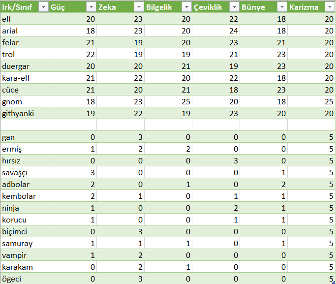

Aşağıda Uzak Diyarlar'da bulunan sınıfların listesi verilmiştir. Listede ayrıca sınıfın ırkın nitelik özelliklerine nasıl katkı yaptığı da gösterilmiştir. Örneğin Savaşçı sınıfı seçilen ırkın niteliklerinden güce 3, bünyeye 1 ve karizmaya 5 ekler.

Büyücü sınıfları içinde kendini saldırı büyüleri konusunda geliştirmiş bir sınıftır. Bütün büyücü sınıflarda olduğu gibi bu sınıfta da büyülerin etkinliği için zeka, saldırılardan kolay kaçabilmek için ise çeviklik çok önemlidir. Irk seçimi buna göre yapılmalıdır.
Seviye 1
Hançer: Hançer kullanabilme yeteneğidir.(otomatik)
Kırbaç: Kırbaç kullanabilme yeteneğidir. (otomatik)
Zayi: Dövüş sırasında anlık kaybolup yeniden belirmedir.(otomatik)
Anımsa: Ait olduğunun dinin tapınağına dönüş komutudur. Seviye 10a kadar geçerlidir. (anımsa)
Parşömen: Parşömen okuma yeteneğidir.(oku yazdıktan sonra okunacak parşömenin adı yazılır.)
Tılsımlar: Büyü kullanabilme ile ilgili bir yetenektir.(otomatik)
Değnekler: Değnek kullanabilme yeteneğidir.(otomatik)
Seviye 6
Meditasyon: Hızlı iyileşmeye benzer. Yöntem olarak uyurken veya dinlenirken zihin yoğunlaşması kullanılır ve büyü gücünün (mana) yenilenmesi sağlanır. (otomatik)
Seviye 7
Pazarlık: Alışverişlerde alırken ucuza alma, satarken pahalıya satma yeteneğidir. Bu yetenek kullanılarak dükkan sahibi fiyat konusunda ikna edilmeye çalışılır. Hırsızlar pazarlık konusunda doğuştan yeteneklidirler. (otomatik)
Seviye 10
Büyü tanıma: Odada yapılan büyülerin isimlerini görebilmeyi sağlayan yetenek.(otomatik)
Seviye 14
Trans: İyileşmenin hızını arttıran yetenek.(otomatik)
Seviye 15
Hızlı iyileşme: Yaşam puanının daha hızlı yenilenmesini sağlayan yetenek. Bu yetenek yürürken de, dinlenirken de, uyurken de çalışır.(otomatik)
Seviye 33
Sıyrılma: Saldırının vuracağı noktadan ayrılma prensibine dayanan tekniktir.Hem saldıran hem de sıyrılmayı deneyen için çeviklik değeri çok önemlidir.Savaşçılar sıyrılma yeteneğinin ustalarıdırlar.(otomatik)
Seviye 34
İkili hamle: Dövüşlerde bir turda iki hamle yapabilmek için gerekli yetenek. (otomatik)Seviye 45
Çıplak el: Silahsızken de etkili dövüşebilmeyi sağlayan yetenek. (otomatik)Seviye 48
Kırbaçla: Silah olarak bir kırbaç kullanırken, kırbacı savurarak düşmanın kaçmasını engelleyecek şekilde zarar verme yeteneği.
Seviye 1
Fişek: Düşmana zarar veren bir büyüdür. Büyünün seviyesi yükseldikçe vereceği zarar artar.(büyü fişek düşman_adı)
Vantrolog: Başka birinin ağzından konuşma büyüsüdür. (büyü vantrolog kurban_adı söylenecekler)
Seviye 4
Asılı disk: Ağırlık taşımak için kullanılan bir disk yaratma büyüsü. (büyü asılı)
Seviye 5
Ayaz: Zarar vermenin yanısıra kurbanın gücünü de azaltan büyü. (büyü ayaz düşman_adı)
Görünmezi saptama: Büyücünün görünmezleri saptamak için kendi gözlerine yaptığı büyüdür.(büyü 'görünmezi saptama')
Seviye 8
Su yaratma: İçecek taşıyıcılarının ( örn. matara ) içini su ile dolduran büyü (büyü 'su yaratma' su_taşıyıcısının_adı)
Büyü saptama: Büyülü eşyaları saptamayı sağlayan yetenek.(büyü büyü)
Şok kavrayışı: Kurban üzerine zarar uygular. Büyünün seviyesi yükseldikçe vereceği zarar da artar.(büyü şok)Seviye 10
Görünmezlik: Hedefin görünmez olmasını sağlayan büyü.(büyü görünmezlik)
Seviye 11
Daimi ışık: Bir eşyanın ışık yaymaya başlamasını sağlayan veya bir ışık kaynağı yaratan büyü.(büyü daimi, büyü daimi eşya_adı)
Cin ateşi: Kurbanı kolay yaralanmasını sağlayan bir aura ile çevreler.(büyü cin düşman_adı)
Seviye 12
Kem saptama: Kötü ruhları saptayabilmek için büyücünün kendi gözlerine yaptığı büyüdür.(büyü kem)
İyi saptama: Büyücünün iyi ruhları saptamak için kendi gözlerine yaptığı büyü.(büyü iyi)Seviye 13
Zırh: Hedef kişiyi korumayı, aldığı darbelerin etkisini azaltmayı amaçlar.(büyü zırh hedef_adı)
Seviye 14
Yanan eller: Hedefe zarar veren bir çeşit büyü.(büyü yanan düşman_adı)
Seviye 15
Mantar: Yenilebilir bir mantar yaratan büyü.(büyü mantar)
Seviye 17
Isı görüşü: Karanlıkta ısı yayan canlıları sezmeye yarar.(büyü ısı)
Seviye 18
Tanımlama: Eşyanın özelliklerini ayrıntılı bir şekilde görmeyi sağlayan büyü (büyü tanımlama eşya_adı)
Seviye 19
Uçma: Uçmayı sağlayan büyü.(büyü uçma hedef_adı)
Seviye 20
Dev gücü: Hedefin gücünü arttıran büyü.(büyü dev hedef_adı)
Kalkan: Kişiyi koruyan bir kalkan oluşturan büyü.(büyü kalkan hedef_adı)
Seviye 22
Renk spreyi: Düşmana zarar veren bir büyü.(büyü renk düşman_adı)
Uzak görüş: Normalden daha uzağı görmeyi sağlayan büyü.(büyü uzak)
Yönelim saptama: Hedefin yönelimini saptamaya yarar.(büyü yönelim hedef_adı)
Nakil: Büyüyü yapanı diyarın rastgele bir odasına nakil eder.(büyü nakil)
Seviye 23
Yıldırım: Kurban üzerine zarar uygular. Büyünün seviyesi yükseldikçe vereceği zarar da artar.(büyü yıldırım düşman_adı)
Çağrı: Uzaktaki bir oyuncuyu ya da mobu büyüyü yapanın yanına transfer etmeyi sağlar.(büyü çağrı çağrılanın_adı)Seviye 24
İptal: Kurban üzerinde etkili olan büyüleri kaldırmak için kullanılan bir büyüdür.(büyü iptal kurban_adı)Pınar: Suyu içilebilir bir pınar yaratan büyü.(büyü pınar)
Cin sisi: Odada saklananları ortaya çıkaran mor bir duman oluşturur.(büyü 'cin sisi')
Hız: Büyücünün hedefi hızlandırmak, çevikliğini artırmak için kullandığı büyü. (büyü hız hedef_adı)
Saydamlık: Kişiyi kapılardan geçecek şekilde saydamlaştırır.(büyü saydamlık)
Seviye 25
Ateş geçirmez: Eşyayı ateşe karşı dayanıklı hale getiren büyü.(büyü 'ateş geçirmez' eşya_adı)
Taş deri: Kişinin derisini bir taş kadar sertleştirerek onu korur.(büyü taş)
Seviye 26
Gül: Bir adet gül yaratmayı sağlayan büyü.(büyü gül)
Zırh yükselt: Zırhların özelliklerini yükseltmek için kullanılan büyü. (büyü 'zırh yükselt' zırh_adı)
Koruma kalkanı: Kişiyi koruyucu bir kalkanla çevreler.(büyü koruma)
Seviye 27
Zırh alçalt: Zırhların üzerindeki büyüleri kaldıran büyü.(büyü 'zırh alçalt' zırh_adı)
Seviye 28
Enerji kırbacı: Kurban üzerine zarar uygular. Büyünün seviyesi yükseldikçe vereceği zarar da artar.(büyü 'enerji kırbacı' düşman_adı)
Yavaşlatma: Kurbanın çevikliğini azaltmak için kullanılır.(büyü yavaş düşman_adı)
Seviye 29
Güç kafesi: Kişinin çevresinde koruyucu bir güç kafesi oluşturan büyü.(büyü güç)
Şarj: Değnekleri şarj etmek için kullanılan büyü.(büyü şarj değnek_adı)
Seviye 30
Nesne bulma: Bir eşyanın diyarın neresinde bulunduğunu bulmaya yarar. (büyü nesne nesne_adı)
Seviye 31
Yıldız yürüyüşü: Kurbanın bulunduğu yere doğru bir yıldız yürüyüşü yapmayı sağlar. Bir anlamda geçit açar.(büyü yıldız kurban_adı)
Kurut: Eşyaları üzerindeki enerjiyi emerek yok etmeyi sağlayan büyü.
Bağ: Tüm mananızı hedef karaktere geçirmenizi sağlar.(büyü bağ hedef_adı)
Seviye 32
Anımsama sözcüğü: Kendi dininin tapınağına dönmeyi sağlayan büyü.(büyü anımsama)
Seviye 33
Şimşek zinciri: Bir şimşek topunun elden ele dolaşması ve dokunduğu herkese zarar vermesi üzerine kuruludur. Enerji zarar verdikçe söner ve en sonunda yitip gider.(büyü şimşek)
Silah yükselt: Silahların özelliklerini yükseltmek için kullanılan büyü.(büyü silah silah_adı)
Seviye 34
Aketum primus: Kurban üzerine zarar uygular. Büyünün seviyesi yükseldikçe vereceği zarar da artar.(büyü aketum düşman_adı)
Silah alçalt: Silahların üzerindeki büyüleri kaldıran büyü.(büyü 'silah alçalt' silah_adı)
Seviye 35
Zehir saptama: Zehirli eşyaları saptamayı sağlayan büyü.(büyü 'zehir saptama' eşya_adı)
Seviye 36
Büyü defet: Büyüleri iptal etmeyi sağlayan büyü.(büyü 'büyü defet')
Seviye 37
Şokçu tuzak: Odayı şok dalgalarıyla doldurur. Bu dalgalar odada bulunan kurbana zarar verir.(büyü 'şokçu tuzak')
Seviye 38
Yaşam kurut: Kurbanın yaşam puanını emerek zarar vermeyi sağlayan büyü.(büyü 'yaşam kurut' kurban_adı)
Seviye 40
Gelişmiş saptama: Gelişmiş görünmezliğe sahip olanları görmeye yarar. (büyü 'gelişmiş saptama')
Seviye 41
Şimşek kalkanı: Odayı büyüyü kullanan kişiyi koruyacak şimşeklerle doldurur.(büyü 'şimşek kalkanı')
Enerji dikeni: Kurban üzerine zarar uygular. Büyünün seviyesi yükseldikçe vereceği zarar da artar.(büyü 'enerji dikeni' kurban_adı)
Seviye 43
Gelişmiş görünmezlik: İleri seviyede bir görünmezlik büyüsüdür.(büyü 'gelişmiş görünmezlik')
Toplu görünmezlik: Gruptakilerin tümünün görünmez olmasını sağlar.(büyü 'toplu görünmezlik')
Seviye 48
Asit oku: Kurban üzerine zarar uygular. Büyünün seviyesi yükseldikçe vereceği zarar da artar.(büyü 'asit oku' kurban_adı)
Gelişmiş zırh: Kişiyi gelişmiş bir zırhla kaplamayı sağlayan büyü.(büyü gelişmiş)
Seviye 50
Onar: Eşyayı onarmayı sağlar.(büyü onar eşya_adı)
Seviye 52
Uyuşukluk sisi: Odayı uyuşukluk yaratıp kişileri yavaşlatan bir sis ile doldurur.(büyü uyuşukluk)
Çığlık: Odada bulunanlara zarar veren düşük frekansta bir çığlık oluşturmayı sağlar.(büyü çığlık)
Seviye 54
Köprü: Bir moba veya oyuncuya geçit açmak için kullanılır. (büyü köprü isim)
Seviye 55
Alev topu: Hedefe alevden bir top göndererek ona zarar vermeyi amaçlayan büyü.(büyü 'alev topu' düşman_adı)
Seviye 56
Taktak: Kilitli kapıları açmaya yarar.(büyü taktak)
Seviye 61
Ejderha nefesi: Kurbana zarar vermeyi sağlayan büyü.(büyü ejderha düşman_adı)
Seviye 62
Nesne nakli: Bir nesneyi diyarın bir yerinden bir yerine nakleden büyü.
Seviye 63
Asit: Kurban üzerine zarar uygular. Büyünün seviyesi yükseldikçe vereceği zarar da artar.(büyü asit kurban_adı)
Seviye 67
Soğurma: Büyü saldırılarının soğurulmasını sağlar. (büyü soğurma)
Seviye 68
Büyü direnci: Kişiyi büyüye karşı dirençli kılar.(büyü 'büyü direnci')
Seviye 70
Nesne canlandırma: Zırhları ve silahları canlandırmayı sağlayan büyü.(büyü 'nesne canlandırma' nesne_ismi)
Seviye 75
Ufala: Kurbanı parçalayarak öldürmeyi sağlayan büyü.Ufalanan kurbandan geriye hiçbir şey kalmaz.(büyü ufala kurban_adı)
Büyücü sınıflar içinde karanlık sanatlara ve ölüm büyülerine en yakın olan sınıftır. Bütün büyücü sınıflarda olduğu gibi bu sınıfta da büyülerin etkinliği için zeka, saldırılardan kolay kaçabilmek için ise çeviklik çok önemlidir. Irk seçimi buna dikkat edilerek yapılmalıdır.
Seviye 1
Hançer: Hançer kullanabilme yeteneğidir.
Kırbaç: Kırbaç kullanabilme yeteneğidir.
Zayi: Dövüş sırasında anlık kaybolup yeniden belirmedir.
Anımsa: Ait olduğunun dinin tapınağına dönüş komutudur. Seviye 10a kadar geçerlidir. (anımsa)
Parşömen: Parşömen okuma yeteneğidir.(oku yazdıktan sonra okunacak parşömenin adı yazılır.)
Tılsımlar: Büyü kullanabilme ile ilgili bir yetenektir.(otomatik)
Değnekler: Değnek kullanabilme yeteneğidir.(otomatik)
Seviye 5
Pazarlık: Alışverişlerde alırken ucuza alma, satarken pahalıya satma yeteneğidir. Bu yetenek kullanılarak dükkan sahibi fiyat konusunda ikna edilmeye çalışılır. Hırsızlar pazarlık konusunda doğuştan yeteneklidirler.(otomatik)
Seviye 6
Meditasyon: Hızlı iyileşmeye benzer. Yöntem olarak uyurken veya dinlenirken zihin yoğunlaşması kullanılır ve büyü gücünün (mana) yenilenmesi sağlanır.(otomatik)
Seviye 9
Hızlı iyileşme: Yaşam puanının daha hızlı yenilenmesini sağlayan yetenek. Bu yetenek yürürken de, dinlenirken de, uyurken de çalışır.(otomatik)
Seviye 10
Büyü tanıma: Odada yapılan büyülerin isimlerini görebilmeyi sağlayan yetenek.(otomatik)
Seviye 21
Trans: İyileşmenin hızını arttıran yetenek.(otomatik)
Seviye 34
İkili hamle: Dövüşlerde bir turda iki hamle yapabilmek için gerekli yetenek. (otomatik)
Seviye 45
Çıplak el: Silahsızken de etkili dövüşebilmeyi sağlayan yetenek. (otomatik)
Seviye 48
Kırbaçla: Silah olarak bir kırbaç kullanırken, kırbacı savurarak düşmanın kaçmasını engelleyecek şekilde zarar verme yeteneği.
Karakam Büyüler
Seviye 2
Fişek: Düşamana zarar veren bir büyüdür. Büyünün seviyesi yükseldikçe vereceği zarar artar.(büyü fişekSeviye 7
Ayaz: Zarar vermenin yanısıra kurbanın gücünü de azaltan büyü. (büyü ayaz düşmanadı)Seviye 10
Anımsama sözcüğü: Kendi dininin tapınağına dönmeyi sağlayan büyü.(büyü anımsama)Seviye 11
Su yaratma: İçecek taşıyıcılarının ( örn. matara ) içini su ile dolduran büyü. (büyü 'su yaratma' su_taşıyıcısının_adı)Seviye 12
Mantar: Yenilebilir bir mantar yaratan büyü.(büyü mantar)Seviye 13
Zırh: Hedef kişiyi korumayı, aldığı darbelerin etkisini azaltmayı amaçlar.(büyü zırh hedef_adı) İyi saptama: Büyücünün iyi ruhları saptamak için kendi gözlerine yaptığı büyü.(büyü iyi)Görünmezi saptama: Büyücünün görünmezleri saptamak için kendi gözlerine yaptığı büyüdür.(büyü 'görünmezi saptama')
Hortlak saptama: Hortlakları saptamayı sağlayan büyü.(büyü hortlak)
Seviye 14
Yanan eller: Hedefe zarar veren bir çeşit büyü.(büyü yanan düşman_adı)Seviye 15
Büyü saptama: Büyülü eşyaları saptamayı sağlayan yetenek.(büyü büyü)Negatiften korunma: Kişiyi negatif büyülere karşı güçlendirir.(büyü negatif)
Seviye 16
Nakil: Büyüyü yapanı diyarın rastgele bir odasına nakil eder.(büyü nakil)Seviye 17
İyiden korunma: Kişiyi iyi yönelimlilere karşı korur.(büyü iyiden)Seviye 18
Koruma kalkanı: Kişiyi koruyucu bir kalkanla çevreler.(büyü koruma)Seviye 19
Körlük: Kurbanı kör etmek maksadıyla kullanılır.(büyü körlük düşman_adı)Seviye 20
Kalkan: Kişiyi koruyan bir kalkan oluşturan büyü.(büyü kalkan hedef_adı)Seviye 21
Zehir saptama: Zehirli eşyaları saptamayı sağlayan büyü.(büyü 'zehir saptama' eşya_adı)Isı görüşü: Karanlıkta ısı yayan canlıları sezmeye yarar.(büyü ısı)
Seviye 22
Yönelim saptama: Hedefin yönelimini saptamaya yarar.(büyü yönelim hedef_adı)Seviye 23
Zehir: Kurbanı zehirlemeyi sağlayan yetenek.(büyü zehir düşman_adı)Uçma: Uçmayı sağlayan büyü.(büyü uçma hedef_adı)
Yıldırım: Kurban üzerine zarar uygular. Büyünün seviyesi yükseldikçe vereceği zarar da artar.(büyü yıldırım düşman_adı)
Seviye 24
Hava kontrolü: Havanın durumunu iyileştiren veya kötüleştiren büyü.(büyü hava iyi, büyü hava kötü)Büyü defet: Büyüleri iptal etmeyi sağlayan büyü.(büyü defet düşman_adı)
Seviye 25
Küçük golem: Sahibine itaat eden küçük bir golem yaratmayı sağlar.(büyü küçük)Seviye 26
Gül: Bir adet gül yaratmayı sağlayan büyü.(büyü gül)Seviye 27
Gizemli düş: Odayı uyutucu bir gizemle doldurur.(büyü gizem)Saydamlık: Kişiyi kapılardan geçecek şekilde saydamlaştırır.(büyü saydam)
Seviye 28
İptal: Kurban üzerinde etkili olan büyüleri kaldırmak için kullanılan bir büyüdür.(büyü iptal kurban_adı)Dev gücü: Hedefin gücünü arttıran büyü.(büyü dev hedef_adı)
Ses direnci: Kurban üzerine zarar uygular. Büyünün seviyesi yükseldikçe vereceği zarar da artar.(büyü ses düşman_adı)
Seviye 29
Yavaşlatma: Kurbanın çevikliğini azaltmak için kullanılır.(büyü yavaş düşman_adı)Zayıflatma: Kurbanın gücünü azaltır ve zayıflamasını sağlar.(büyü zayıf düşman_adı)
Seviye 30
Taş deri: Kişinin derisini bir taş kadar sertleştirerek onu korur.(büyü taş)Seviye 31
Pınar: Suyu içilebilir bir pınar yaratan büyü.(büyü pınar)Seviye 32
İyilik defet: İyi varlıklara zarar veren büyü.(büyü iyilik düşman_adı)Seviye 33
Şimşek zinciri: Bir şimşek topunun elden ele dolaşması ve dokunduğu herkese zarar vermesi üzerine kuruludur. Enerji zarar verdikçe söner ve en sonunda yitip gider.(büyü şimşek)Bağ: Tüm mananızı hedef karaktere geçirmenizi sağlar.(büyü bağ hedef_adı)
Seviye 34
Lanet: Bir eşyayı veya kurbanı lanetlemeyi sağlayan büyü.(büyü lanet düşman_adı, büyü lanet nesne_adı)Seviye 35
Hayali öfke: Kurban üzerine zarar uygular. Büyünün seviyesi yükseldikçe vereceği zarar da artar.(büyü hayali düşman_adı)Seviye 36
Veba: Kurbanın büyülü veba hastalığına yakalanmasına neden olur. Veba hastalığı kurbanın gücünü azaltır ve tedavi edilmezse kısa sürede ölümle sonuçlanır. Vebanın bir diğer özelliği ise bulaşıcı bir virüs yaymasıdır.Kalabalık bölgelerde dolaşan bir vebalı birçok kişinin bu hastalığı kapmasına neden olabilir.(büyü veba düşman_adı)
Seviye 37
Şokçu tuzak: Odayı şok dalgalarıyla doldurur. Bu dalgalar odada bulunan kurbana zarar verir.(büyü 'şokçu tuzak')Seviye 38
Ölü canlandırma: Cesetleri canlandırarak hortlaklar yaratmayı sağlar.(büyü 'ölü canlandırma' ceset)Seviye 39
Uyku: Kurbanı uyutmak için kullanılır.(büyü uyku düşman_adı)Taş golem: Efendisine itaat eden taştan bir golem yaratmayı sağlar.(büyü 'taş golem')
Seviye 40
Nefes kesme: Kurbana zarar vermeyi sağlayan büyü.(büyü nefes düşman_adı)Gelişmiş saptama: Gelişmiş görünmezliğe sahip olanları görmeye yarar.
(büyü 'gelişmiş saptama')Seviye 41
Şimşek kalkanı: Odayı büyüyü kullanan kişiyi koruyacak şimşeklerle doldurur.(büyü 'şimşek kalkanı')Seviye 42
Ateş geçirmez: Eşyayı ateşe karşı dayanıklı hale getiren büyü.(büyü 'ateş geçirmez' eşya_adı)Seviye 43
Destek: Yaşam puanında iyileştirme sağlar.(büyü destek)Köprü: Bir moba veya oyuncuya geçit açmak için kullanılır. (büyü köprü isim)
Seviye 44
Hortlak eli: Büyüyü yapanın yaşam puanını arttırarak, kurbanı yoran, manasını azaltan ve ona zarar veren büyü.(büyü 'hortlak eli' düşman_adı)Mumyala: Cesedi canlandırmayı sağlar.(büyü mumyala ceset)
Seviye 45
Yaşam kurut: Kurbanın yaşam puanını emerek zarar vermeyi sağlayan büyü. (büyü 'yaşam kurut' kurban_adı)Seviye 47
Gizemli yürüyüş: Kendinden en fazla 5 seviye altında olan bir moba veya çağrısı açık bir oyuncuya lanetli olmayan bir odadan yapabileceğin geçit büyüsü. (büyü “gizemli yürüyüş” isim)Seviye 48
Asit oku: Kurban üzerine zarar uygular. Büyünün seviyesi yükseldikçe vereceği zarar da artar.(büyü 'asit oku' kurban_adı)Sıcaktan korunma: Kişiyi sıcağa ve sıcak büyülere karşı güçlendirir.(büyü sıcaktan)
Seviye 50
Soğuktan korunma: Kişiyi soğuğa ve soğuk büyülere karşı güçlendirir.(büyü soğuktan)Gölge çağrısı: Kendisini çağıran efendisine itaat eden bir gölge çağırmayı sağlar.(büyü gölge)
Seviye 52
Demir golem: Sahibine itaat eden demir bir golem yaratmayı sağlar.(büyü 'demir golem')Seviye 53
Kalkanlama: Gerçek kaynağa erişerek düşmanın çevresinde bir kalkan oluşturmayı sağlar.(büyü kalkanlama düşman_adı)Seviye 54
Ruh bağı: Kurbanın ruhunu kendisine bağlayarak onu kölesi haline getirir. (büyü 'ruh bağı' kurban_adı)Seviye 57
Hortlak kontrolü: Çevredeki hortlakları kontrol altına almayı sağlayan büyü. (büyü 'hortlak kontrolü' kurban_adı)Seviye 58
Ağ: Kurbanın herhangi bir yöne ilerlemesini engeller ve kurbanın çevikliği ile vuruşzarını düşürür.(büyü ağ düşman_adı)Seviye 59
Delilik: Kurbanda kana susama durumu yaratır ve onu saldırganlaştırır.(büyü delilik kurban_adı)Seviye 62
Taktak: Kilitli kapıları açmaya yarar.(büyü taktak)Seviye 63
Asit Patlaması: Kurban üzerine zarar uygular. Büyünün seviyesi yükseldikçe vereceği zarar da artar.(büyü “asit patlaması” kurban_adı) Çürüme: Kurbanın etinin çürümeye başlamasını sağlayan büyü.(büyü çürüme kurban_adı)Seviye 64
Lanetli topraklar: Odayı lanetlemeyi sağlayan büyü.(büyü 'lanetli topraklar')Seviye 65
Kasırga: Odada bulunanların tümüne zarar veren bir kasırga yaratır.(büyü kasırga)Seviye 68
Büyülü şişe: Kurbanın ruhunu yakalayıp büyülü bir şişenin içine koymaya yarar.(büyü 'büyülü şişe' kurban_adı)Seviye 69
Büyü direnci: Kişiyi büyüye karşı dirençli kılar.(büyü 'büyü direnci')Seviye 71
Adament golem: Adament'ten bir golem yaratmayı sağlar. Bu golem yaratıcısını takip eder ve onun yanında dövüşür.(büyü adament)Seviye 73
Korku: Kurbanı korkunun pençelerine alan büyü.(büyü korku düşman_adı)Seviye 78
Ölüm sözcüğü: Çok güçlü büyücülerin kurbanlarını bir sözcükle öldürmesini sağlar.(büyü 'ölüm sözcüğü' düşman_adı) 10.3 ÖgeciAteş, su, hava ve toprak büyülerinde kendilerini geliştirmiş bir büyücü sınıfıdır. Bütün büyücü sınıflarda olduğu gibi bu sınıfta da büyülerin etkinliği için zeka, saldırılardan kolay kaçabilmek için ise çeviklik çok önemlidir. Irk seçimi buna göre yapılmalıdır.
Ögeci YeteneklerSeviye 1
Hançer: Hançer kullanabilme yeteneğidir.Döven: Döven kullanabilme yeteneğidir.
Kırbaç: Kırbaç kullanabilme yeteneğidir.
Zayi: Dövüş sırasında anlık kaybolup yeniden belirmedir.
Anımsa: Ait olduğunun dinin tapınağına dönüş komutudur. Seviye 10a kadar geçerlidir. (anımsa)
Parşömen: Parşömen okuma yeteneğidir.(oku yazdıktan sonra okunacak parşömenin adı yazılır.)
Tılsımlar: Büyü kullanabilme ile ilgili bir yetenektir.(otomatik)
Değnekler: Değnek kullanabilme yeteneğidir.(otomatik)
Seviye 5
Pazarlık: Alışverişlerde alırken ucuza alma, satarken pahalıya satma yeteneğidir. Bu yetenek kullanılarak dükkan sahibi fiyat konusunda ikna edilmeye çalışılır. Hırsızlar pazarlık konusunda doğuştan yeteneklidirler. (otomatik)Seviye 6
Meditasyon: Hızlı iyileşmeye benzer. Yöntem olarak uyurken veya dinlenirken zihin yoğunlaşması kullanılır ve büyü gücünün (mana) yenilenmesi sağlanır. (otomatik)Seviye 9
Hızlı iyileşme: Yaşam puanının daha hızlı yenilenmesini sağlayan yetenek. Bu yetenek yürürken de, dinlenirken de, uyurken de çalışır.(otomatik)Seviye 10
Büyü tanıma: Odada yapılan büyülerin isimlerini görebilmeyi sağlayan yetenek.(otomatik)Seviye 21
Trans: İyileşmenin hızını arttıran yetenek.(otomatik)Seviye 27
Sıyrılma: Saldırının vuracağı noktadan ayrılma prensibine dayanan tekniktir.Hem saldıran hem de sıyrılmayı deneyen için çeviklik değeri çok önemlidir.Savaşçılar sıyrılma yeteneğinin ustalarıdırlar.(otomatik)Seviye 34
İkili hamle: Dövüşlerde bir turda iki hamle yapabilmek için gerekli yetenek. (otomatik)Seviye 35
Çıplak el: Silahsızken de etkili dövüşebilmeyi sağlayan yetenek. (otomatik)Seviye 48
Kırbaçla: Silah olarak bir kırbaç kullanırken, kırbacı savurarak düşmanın kaçmasını engelleyecek şekilde zarar verme yeteneği. Ögeci BüyülerSeviye 1
Fişek: Düşamana zarar veren bir büyüdür. Büyünün seviyesi yükseldikçe vereceği zarar artar.(büyü fişek düşman_adı)Seviye 3
Vantrolog: Başka birinin ağzından konuşma büyüsüdür. (büyü vantrologSeviye 4
Asılı disk: Ağırlık taşımak için kullanılan bir disk yaratma büyüsü. (büyü asılı)Seviye 7
Zehir saptama: Zehirli eşyaları saptamayı sağlayan büyü.(büyü 'zehir saptama' eşya_adı)Seviye 8
Ayaz: Zarar vermenin yanısıra kurbanın gücünü de azaltan büyü. (büyü ayaz düşmanadı)Su yaratma: İçecek taşıyıcılarının ( örn. matara ) içini su ile dolduran büyü.
(büyü 'su yaratma' su_taşıyıcısının_adı)Görünmezi saptama: Büyücünün görünmezleri saptamak için kendi gözlerine yaptığı büyüdür.(büyü 'görünmezi saptama')
Şok kavrayışı: Kurban üzerine zarar uygular. Büyünün seviyesi yükseldikçe vereceği zarar da artar.(büyü şok)Seviye 10
Görünmezlik: Hedefin görünmez olmasını sağlayan büyü.(büyü görünmezlik)Seviye 11
Cin ateşi: Kurbanı kolay yaralanmasını sağlayan bir aura ile çevreler.(büyü cin düşman_adı)Seviye 12
Büyü saptama: Büyülü eşyaları saptamayı sağlayan yetenek.(büyü büyü)Seviye 13
Zırh: Hedef kişiyi korumayı, aldığı darbelerin etkisini azaltmayı amaçlar.(büyü zırh hedef_adı)Mantar: Yenilebilir bir mantar yaratan büyü.(büyü mantar)
Kem saptama: Kötü ruhları saptayabilmek için büyücünün kendi gözlerine yaptığı büyüdür.(büyü kem)
İyi saptama: Büyücünün iyi ruhları saptamak için kendi gözlerine yaptığı büyü.(büyü iyi)Seviye 14
Yanan eller: Hedefe zarar veren bir çeşit büyü.(büyü yanan düşman_adı)Seviye 16
Nakil: Büyüyü yapanı diyarın rastgele bir odasına nakil eder.(büyü nakil)Seviye 17
Isı görüşü: Karanlıkta ısı yayan canlıları sezmeye yarar.(büyü ısı)Seviye 18
Tanımlama: Eşyanın özelliklerini ayrıntılı bir şekilde görmeyi sağlayan büyü. (büyü tanımlama eşya_adı)Seviye 19
Deprem: Kurbana zarar vermeyi sağlayan alan büyüsü.(büyü deprem)Seviye 20
Hava kontrolü: Havanın durumunu iyileştiren veya kötüleştiren büyü.(büyü hava iyi, büyü hava kötü)Kalkan: Kişiyi koruyan bir kalkan oluşturan büyü.(büyü kalkan hedef_adı)
Seviye 21
Uçma: Uçmayı sağlayan büyü.(büyü uçma hedef_adı)Seviye 22
Renk spreyi: Düşmana zarar veren bir büyü.(büyü renk düşman_adı)Seviye 23
Zehir tedavi: Hedefteki zehri yoketmeyi amaçlayan büyü. Zehir tedavi.(büyü “zehir tedavi” hedef_adı)Yıldırım: Kurban üzerine zarar uygular. Büyünün seviyesi yükseldikçe vereceği zarar da artar.(büyü yıldırım düşman_adı)
Seviye 24
Cin sisi: Odada saklananları ortaya çıkaran mor bir duman oluşturur.(büyü 'cin sisi')Saydamlık: Kişiyi kapılardan geçecek şekilde saydamlaştırır.(büyü saydam)
Seviye 25
Taş deri: Kişinin derisini bir taş kadar sertleştirerek onu korur.(büyü taş)Seviye 26
Gül: Bir adet gül yaratmayı sağlayan büyü.(büyü gül)Koruma kalkanı: Kişiyi koruyucu bir kalkanla çevreler.(büyü koruma)
Seviye 29
Uşak küresi: Koruyucu bir küre yaratmayı sağlayan büyü.(büyü uşak)Seviye 31
Pınar: Suyu içilebilir bir pınar yaratan büyü.(büyü pınar)Nesne bulma: Bir eşyanın diyarın neresinde bulunduğunu bulmaya yarar.
(büyü nesne nesne_adı)Seviye 32
Anımsama sözcüğü: Kendi dininin tapınağına dönmeyi sağlayan büyü.(büyü anımsama)Seviye 33
Şimşek çağrısı: Ancak açık havada ve kötü havada yapılabilen bu büyü, yakında bulunanlara vuran bir şimşek yaratır.(büyü 'şimşek çağrısı') Şimşek zinciri: Bir şimşek topunun elden ele dolaşması ve dokunduğu herkese zarar vermesi üzerine kuruludur. Enerji zarar verdikçe söner ve en sonunda yitipgider.(büyü şimşek)Bağ: Tüm mananızı hedef karaktere geçirmenizi sağlar.(büyü bağ hedef_adı)
Seviye 34
Manyetizma: Kurban üzerine zarar uygular. Büyünün seviyesi yükseldikçe vereceği zarar da artar.(büyü manyetizma düşman_adı)Seviye 35
Alev akımı: Kavurucu alevlerle kurbana zarar veren büyü.(büyü 'alev akımı' düşman_adı)Seviye 38
Toprak uşağı: Efendisine itaat eden bir toprak uşağı yaratır.(büyü 'toprak uşağı')Seviye 39
Sıcaktan korunma: Kişiyi sıcağa ve sıcak büyülere karşı güçlendirir.(büyü sıcaktan)Seviye 40
Gelişmiş saptama: Gelişmiş görünmezliğe sahip olanları görmeye yarar. (büyü 'gelişmiş saptama')Seviye 41
Enerji dikeni: Kurban üzerine zarar uygular. Büyünün seviyesi yükseldikçe vereceği zarar da artar.(büyü 'enerji dikeni' kurban_adı)Arz kırımı: Arzı kurbanın ayaklarına doğru kırarak ona zarar vermeyi sağlar.
(büyü 'arz kırımı' düşman_adı)Seviye 42
Ayaz topu: Kurbana zarar vermeyi sağlayan büyü.(büyü “ayaz topu” düşman_adı)Hava uşağı: Efendisine itaat eden bir hava uşağı yaratır.(büyü 'hava uşağı')
Seviye 43
Sarmal akım: Kurbana açılan sarmal bir akım oluşturmak ve bu sarmalın içinden giderek kurbana ulaşmak için kullanılır.(büyü sarmal kurban_adı)Gelişmiş görünmezlik: İleri seviyede bir görünmezlik büyüsüdür.(büyü 'gelişmiş görünmezlik')
Seviye 44
Soğuktan korunma: Kişiyi soğuğa ve soğuk büyülere karşı güçlendirir.(büyü soğuktan)Seviye 46
Taktak: Kilitli kapıları açmaya yarar.(büyü taktak)Toplu görünmezlik: Gruptakilerin tümünün görünmez olmasını sağlar.(büyü 'toplu görünmezlik')
Seviye 47
Rüzgar duvarı: Odada bulunan herkese saldıran bir rüzgar duvarı oluşturur. (büyü rüzgar)Seviye 48
Asit oku: Kurban üzerine zarar uygular. Büyünün seviyesi yükseldikçe vereceği zarar da artar.(büyü 'asit oku' kurban_adı)Su uşağı: Efendisine itaat eden bir su uşağı yaratır.(büyü 'su uşağı')
Seviye 50
Onar: Eşyayı onarmayı sağlar.(büyü onar eşya_adı)Seviye 51
Kum fırtınası: Odada bulunanlara zarar veren bir kum fırtınası oluşturur. Bu büyü suya yakın yerlerde uygulanamaz.(büyü 'kum fırtınası')Seviye 53
Topraklama: Kişinin vücuduna topraklama özelliği verir. Bu elektriğin vücuttan kolayca atılmasını sağlar.(büyü topraklama)Seviye 55
Çöl yumruğu: Kurbana zarar vermeyi sağlayan büyü.Çöl ortamında yapılır. (büyü çöl düşman_adı)Alev topu: Hedefe alevden bir top göndererek ona zarar vermeyi amaçlayan büyü.(büyü 'alev topu' düşman_adı)
Seviye 58
Ateş uşağı: Efendisine itaat eden bir ateş uşağı yaratır.(büyü 'ateş uşağı')Seviye 62
Tsunami: Suya yakın yerlerde kullanılabilen bu büyü sudan oluşturulmuş bir yumruk ile kurbana zarar vermeyi amaçlar.(büyü tsunami düşman_adı)Seviye 63
Asit patlaması: Kurban üzerine zarar uygular. Büyünün seviyesi yükseldikçe vereceği zarar da artar.(büyü “asit patlaması” kurban_adı)Seviye 65
Ateş ve buz: Odada bulunanlara ateş ve buz topu atmayı sağlayan büyü.(büyü 'ateş ve buz')Seviye 67
Fay: Kurbana zarar vermeyi sağlayan büyü.(büyü fay düşman_adı)Seviye 68
Alev kalkanı: Ateş veya buz kalkanı yaratmayı sağlayan büyü.(büyü 'alev kalkanı' ateş, büyü 'alev kalkanı' buz)Enerji uşağı: Efendisine itaat eden bir enerji uşağı yaratır.(büyü 'enerji uşağı')
Seviye 71
Büyü direnci: Kişiyi büyüye karşı dirençli kılar.(büyü 'büyü direnci')Seviye 73
Arz soluşu: İleri bir görünmezlik büyüsü.(büyü 'arz soluşu' hedef_adı)Seviye 75
Arz yutağı: Yerde kurbanı yutarak yok eden bir yarık oluşturmayı sağlayan büyü.(büyü 'arz yutağı' düşman_adı) 10.4 ErmişDini inançları sayesinde, olağanüstü manevi güce ve ilahi bir desteğe sahip, koruyucu büyüler konusunda uzman bir sınıftır. Saldırı konusunda iyi olmasa da, bir macera grubunun üyelerini desteklemekte üstüne yoktur.
Ermiş Yetenekler
Seviye 1
Hançer: Hançer kullanabilme yeteneğidir.Döven: Döven kullanabilme yeteneğidir.
Topuz: Topuz kullanabilme yeteneğidir.
Kılıç: Kılıç kullanabilme yeteneğidir.
Kırbaç: Kırbaç kullanabilme yeteneğidir.
Anımsa: Ait olduğunun dinin tapınağına dönüş komutudur. Seviye 10a kadar geçerlidir. (anımsa)
Parşömen: Parşömen okuma yeteneğidir.(oku yazdıktan sonra okunacak parşömenin adı yazılır.)
Tılsımlar: Büyü kullanabilme ile ilgili bir yetenektir.(otomatik)
Değnekler: Değnek kullanabilme yeteneğidir.(otomatik)
Seviye 6
Meditasyon: Hızlı iyileşmeye benzer. Yöntem olarak uyurken veya dinlenirken zihin yoğunlaşması kullanılır ve büyü gücünün (mana) yenilenmesi sağlanır. (otomatik)Seviye 9
Hızlı iyileşme: Yaşam puanının daha hızlı yenilenmesini sağlayan yetenek. Bu yetenek yürürken de, dinlenirken de, uyurken de çalışır.(otomatik)Seviye 12
Tekme: Savaşçıların hedeflerine güçlü bir tekme atma yetenekleri. Düşmana geçikme verir.(tekme)Seviye 15
Trans: İyileşmenin hızını arttıran yetenek.(otomatik)Seviye 17
Kalkan bloğu: Kurbanın saldırısını kalkanla karşılamak için geliştirilen yetenek. (otomatik)Seviye 18
Pazarlık: Alışverişlerde alırken ucuza alma, satarken pahalıya satma yeteneğidir. Bu yetenek kullanılarak dükkan sahibi fiyat konusunda ikna edilmeye çalışılır. Hırsızlar pazarlık konusunda doğuştan yeteneklidirler. (otomatik)Seviye 25
Karşılama: Kurbanın saldırısını silahla karşılamak için kullanılan yetenek. (otomatik)Seviye 28
İkili hamle: Dövüşlerde bir turda iki hamle yapabilmek için gerekli yetenek. (otomatik)Seviye 30
Çıplak el: Silahsızken de etkili dövüşebilmeyi sağlayan yetenek. (otomatik)Büyü tanıma: Odada yapılan büyülerin isimlerini görebilmeyi sağlayan yetenek.(otomatik)
Seviye 33
Yüksek zarar: Kurbana verilen zararı artırmayı sağlayan yetenek. (otomatik)Seviye 48
Kırbaçla: Silah olarak bir kırbaç kullanırken, kırbacı savurarak düşmanın kaçmasını engelleyecek şekilde zarar verme yeteneği. 91Ermiş Büyüler
Seviye 1
Zırh: Hedef kişiyi korumayı, aldığı darbelerin etkisini azaltmayı amaçlar.(büyü zırh hedef_adı)Seviye 2
Hafif zarar: Kurbana zarar verici bir darbe vurmak için kullanılır.(büyü 'hafif zarar' düşman_adı)Seviye 3
Su yaratma: İçecek taşıyıcılarının ( örn. matara ) içini su ile dolduran büyü. (büyü 'su yaratma' su_taşıyıcısının_adı)Seviye 4
Hafif tedavi: İyileştirme büyüsü.(büyü 'hafif tedavi' hedef_adı)Seviye 5
Daimi ışık: Bir eşyanın ışık yaymaya başlamasını sağlayan veya bir ışık kaynağı yaratan büyü.(büyü daimi, büyü daimi eşya_adı)Seviye 6
Cin ateşi: Kurbanı kolay yaralanmasını sağlayan bir aura ile çevreler.(büyü cin düşman_adı)Seviye 7
Yenileme: Yorgunluğu azaltmak için kullanılır.(büyü yenileme)Seviye 8
Ciddi zarar: Kurbana zarar verici bir darbe vurmak için kullanılır.(büyü 'ciddi zarar' düşman_adı)Mantar: Yenilebilir bir mantar yaratan büyü.(büyü mantar)
Seviye 9
Kemden korunma: Kişiyi kem yönelimlilere karşı korur.(büyü kemden) İyiden korunma: Kişiyi iyi yönelimlilere karşı korur.(büyü iyiden)Seviye 10
Kutsama: büyüye karşı korumayı ve vuruş zarını arttıran bir koruma büyüsü. (büyü kutsama hedef_adı)Ciddi tedavi: İyileştirme büyüsü.(büyü 'ciddi tedavi')
Asılı disk: Ağırlık taşımak için kullanılan bir disk yaratma büyüsü. (büyü asılı)
Seviye 11
Körlük tedavi: Hedefin gözlerindeki körlüğü yoketmeyi amaçlayan büyü. (büyü 'körlük tedavi' hedef_adı)Kem saptama: Kötü ruhları saptayabilmek için büyücünün kendi gözlerine yaptığı büyüdür.(büyü kem)
İyi saptama: Büyücünün iyi ruhları saptamak için kendi gözlerine yaptığı büyü.(büyü iyi)Seviye 12
Büyü saptama: Büyülü eşyaları saptamayı sağlayan yetenek.(büyü büyü)Seviye 13
Yönelim saptama: Hedefin yönelimini saptamaya yarar.(büyü yönelim hedef_adı)Seviye 14
Körlük: Kurbanı kör etmek maksadıyla kullanılır.(büyü körlük düşman_adı)Seviye 15
Kritik zarar: Kurbana zarar verici bir darbe vurmak için kullanılır.(büyü 'kritik zarar' düşman_adı)Seviye 16
Ateş geçirmez: Eşyayı ateşe karşı dayanıklı hale getiren büyü.(büyü 'ateş geçirmez' eşya_adı)Seviye 17
Görünmezi saptama: Büyücünün görünmezleri saptamak için kendi gözlerine yaptığı büyüdür.(büyü 'görünmezi saptama')Seviye 18
Kritik tedavi: İyileştirme büyüsü.(büyü 'kritik tedavi')Seviye 19
Hastalık tedavi: Hedefteki hastalıkları yoketmeyi amaçlayan büyü.(büyü 'hastalık tedavi' hedef_adı)Deprem: Kurbana zarar vermeyi sağlayan alan büyüsü.(büyü deprem)
Seviye 21
Hava kontrolü: Havanın durumunu iyileştiren veya kötüleştiren büyü.(büyü hava iyi, büyü hava kötü)Seviye 22
Zehir: Kurbanı zehirlemeyi sağlayan yetenek.(büyü zehir düşman_adı) Çağrı: Uzaktaki bir oyuncuyu ya da mobu büyüyü yapanın yanına transfer etmeyi sağlar.(büyü çağrı çağrılanın_adı)Seviye 23
Zehir tedavi: Hedefteki zehri yoketmeyi amaçlayan büyü. Zehir tedavi.(büyü “zehir tedavi” hedef_adı)Seviye 24
Zayıflatma: Kurbanın gücünü azaltır ve zayıflamasını sağlar.(büyü zayıf düşman_adı)Seviye 25
Zırh yükselt: Zırhların özelliklerini yükseltmek için kullanılan büyü. (büyü 'zırh yükselt' zırh_adı)Silah yükselt: Silahların özelliklerini yükseltmek için kullanılan büyü.(büyü silah silah_adı)
Isı görüşü: Karanlıkta ısı yayan canlıları sezmeye yarar.(büyü ısı)
Seviye 26
Yatıştırma: Sürmekte olan bir dövüşü bitirmek için kullanılır.(büyü yatıştırma) İptal: Kurban üzerinde etkili olan büyüleri kaldırmak için kullanılan bir büyüdür.(büyü iptal kurban_adı)Zarar: Kurbana zarar vermeyi sağlayan saldırı büyüsü.(büyü zarar düşman_adı)
Metali ısıtma: Kurbanın üzerindeki metal eşyalardan birinin aşırı derecede ısınmasına neden olur. Eşyası ısınan kurban bu eşyayı çıkarır ve yere atar.
Seviye 27
Pınar: Suyu içilebilir bir pınar yaratan büyü.(büyü pınar)Kem defet: Kem varlıklara zarar veren büyü.(büyü 'kem defet' düşman_adı)
İyilik defet: İyi varlıklara zarar veren büyü.(büyü iyilik düşman_adı)Seviye 28
Şifa: Kişiyi iyileştirmeyi sağlar.(büyü şifa hedef_adı)Anımsama sözcüğü: Kendi dininin tapınağına dönmeyi sağlayan büyü.(büyü anımsama)
Seviye 29
Takdis: Hedefi gelecek darbelerden korumayı amaçlayan büyü. Diyarın bilinen en kuvvetli koruma büyülerindendir.(büyü takdis hedef_adı)Seviye 30
Uçma: Uçmayı sağlayan büyü.(büyü uçma hedef_adı)Nesne bulma: Bir eşyanın diyarın neresinde bulunduğunu bulmaya yarar.
(büyü nesne nesne_adı)Seviye 31
Cin sisi: Odada saklananları ortaya çıkaran mor bir duman oluşturur.(büyü 'cin sisi')Seviye 32
Saydamlık: Kişiyi kapılardan geçecek şekilde saydamlaştırır.(büyü saydam)Lanet kaldır: Bir eşyanın ya da kişinin üzerindeki laneti kaldırmak için kullanılır.(büyü 'lanet kaldır' hedef_adı)
Nakil: Büyüyü yapanı diyarın rastgele bir odasına nakil eder.(büyü nakil)
Seviye 33
Lanet: Bir eşyayı veya kurbanı lanetlemeyi sağlayan büyü.(büyü lanet düşman_adı, büyü lanet nesne_adı)Gelişmiş zırh: Kişiyi gelişmiş bir zırhla kaplamayı sağlayan büyü.(büyü gelişmiş)
Seviye 34
Cinnet: Kişinin kutsal bir gazapla dolmasını sağlayarak onu dövüşe hazırlayan büyü.(büyü cinnet)Korku kaldır: Kurban üzerindeki korkuyu kaldırmak için kullanılır.(büyü 'korku kaldır' hedef_adı)
Seviye 35
Grup savunma: Gruptakilerin etrafına koruyucu bir kalkan ören büyü.(büyü 'grup savunma')Kalkan: Kişiyi koruyan bir kalkan oluşturan büyü.(büyü kalkan hedef_adı)
Güneş uçuşu: Kurbana açılan bir geçit oluşturur.(büyü 'güneş uçuşu' hdef_adı)
Seviye 36
Tanımlama: Eşyanın özelliklerini ayrıntılı bir şekilde görmeyi sağlayan büyü. (büyü tanımlama eşya_adı)Taş deri: Kişinin derisini bir taş kadar sertleştirerek onu korur.(büyü taş)
Seviye 37
Mavi alev: Zarar verici mavi bir alev yaratmak için kullanılır.(büyü 'mavi alev' düşman_adı) İblis ateşi: Kurbana zarar vermenin yanında aynı zamanda lanetleyen büyü. (büyü 'iblis ateşi' düşman_adı) İlahi enerji: Yönelimi iyi olmayan kurbana zarar veren ve onu kör eden büyüdür.(büyü ilahi düşman_adı)Seviye 38
Koruma kalkanı: Kişiyi koruyucu bir kalkanla çevreler.(büyü koruma)Yavaşlatma: Kurbanın çevikliğini azaltmak için kullanılır.(büyü yavaş düşman_adı)
Yüksek şifa: İleri derecede iyileştirici bir büyüdür. Uygulanan kişinin vücudunda sıcak bir his oluşmasını sağlar.(büyü yüksek hedef_adı)
Seviye 39
Zehir saptama: Zehirli eşyaları saptamayı sağlayan büyü.(büyü 'zehir saptama' eşya_adı)Dev gücü: Hedefin gücünü arttıran büyü.(büyü dev hedef_adı)
Sıcaktan korunma: Kişiyi sıcağa ve sıcak büyülere karşı güçlendirir.(büyü sıcaktan)
Seviye 41
Lanetli topraklar: Odayı lanetlemeyi sağlayan büyü.(büyü 'lanetli topraklar') Şifa ışığı: Odaya atılan bu büyü odada bulunanları iyileştiren bir ışık yaratır. (büyü 'şifa ışığı')Kutsal topraklar: Odadaki laneti, zehiri, uyuşukluk sisini, uyku gazını ve vebayı kaldırmak için kullanılır.(büyü 'kutsal topraklar')
Seviye 42
Yaşam kurut: Kurbanın yaşam puanını emerek zarar vermeyi sağlayan büyü. (büyü 'yaşam kurut' kurban_adı)Alev saldırısı: Alev saldırılarıyla kurbana zarar vermeyi sağlayan büyü.(büyü alev düşman_adı)
Seviye 43
Büyü defet: Büyüleri iptal etmeyi sağlayan büyü.(büyü defet düşman_adı)Seviye 44
Şimşek çağrısı: Ancak açık havada ve kötü havada yapılabilen bu büyü, yakında bulunanlara vuran bir şimşek yaratır.(büyü 'şimşek çağrısı')Soğuktan korunma: Kişiyi soğuğa ve soğuk büyülere karşı güçlendirir.(büyü soğuktan)
Seviye 45
Arz kırımı: Arzı kurbanın ayaklarına doğru kırarak ona zarar vermeyi sağlar. (büyü 'arz kırımı' düşman_adı)Seviye 47
Toplu görünmezlik: Gruptakilerin tümünün görünmez olmasını sağlar.(büyü 'toplu görünmezlik')Seviye 48
Kutsal söz: Odada bulunanlardan büyüyü yapanla aynı yönelime sahip olanları olumlu, ters yönelime sahip olanlarda olumsuz etki yapan bir büyüdür. (büyü 'kutsal söz')Seviye 49
İlham: Grup üyelerini kutsamayı sağlayan büyü.(büyü ilham)Seviye 50
Devir: Kurbana parlak bir ışık ışınıyla saldırmayı sağlayan büyü.(büyü devir düşman_adı)Seviye 53
İlk yardım: Adından anlaşıldığı gibi üzerinde uygulandığı kişiyi iyileştirir. (büyü 'ilk yardım' hedef_adı)Seviye 54
Toplu şifa: Odada bulunan herkesi iyileştirmeye yarar.(büyü 'toplu şifa')Seviye 55
Silah kutsama: Silahı kutsamayı sağlar. Bu durum silahın verimini artırır. (büyü 'silah kutsama' silah_adı)Seviye 58
Çöl yumruğu: Kurbana zarar vermeyi sağlayan büyü.Çöl ortamında yapılır. (büyü çöl düşman_adı)Yüksek tedavi: İleri derecede tedavi için kullanılır.(büyü 'yüksek tedavi' hedef_adı)
Seviye 60
Bıçak duvarı: Kurbanın çevresinde bıçaklardan bir duvar oluşur. Bu bıçaklar kurbana her dokunduğunda zarar verir.(büyü 'bıçak duvarı' düşman_adı)Seviye 62
Toplu takdis: Gruptakilerin tümünü takdis büyüsüyle kutsar ve korur.(büyü 'toplu takdis')Seviye 63
Geçit: Hedefe bir geçit açar. (büyü geçit hedef_adı)Seviye 65
Grup şifa: Gruptakilere iyileştirici bir sıcaklık veren büyü.(büyü 'grup şifa')Seviye 71
İyileştiren ışık: İleri derecede tedavi edici bir büyüdür. Kurban üzerindeki körlüğü, laneti ve vebayı kaldırmasının yanında aynı zamanda iyileştirir.(büyü 'iyileştiren ışık' hedef_adı)Seviye 83
Zihin ışığı: Bir ışık odadakilerin manasını hızla yeniler.(büyü 'zihin ışığı') 10.5 HırsızTüm sanatı çevikliğe dayanan bir sınıftır. Gizli ve hızlı hareket etme yetenekleri, hem keselerinin boş kalmamasını, hem de düşmanlarından kolayca kurtulabilmelerini sağlar. Sınıfi içi ittifakı çok güçlü olduğundan, diyarın en güçlü ve köklü loncalarından birine sahiptirler.
Hırsız Yetenekler
Seviye 1
Hançer: Hançer kullanabilme yeteneğidir.Topuz: Topuz kullanabilme yeteneğidir.
Mızrak: Mızrak kullanabilme yeteneğidir.
Kılıç: Kılıç kullanabilme yeteneğidir.
Sıyrılma: Saldırının vuracağı noktadan ayrılma prensibine dayanan tekniktir.Hem saldıran hem de sıyrılmayı deneyen için çeviklik değeri çok önemlidir.Savaşçılar sıyrılma yeteneğinin ustalarıdırlar.(otomatik)
Pazarlık: Alışverişlerde alırken ucuza alma, satarken pahalıya satma yeteneğidir. Bu yetenek kullanılarak dükkan sahibi fiyat konusunda ikna edilmeye çalışılır. Hırsızlar pazarlık konusunda doğuştan yeteneklidirler.
(otomatik)Saklan: Gölgelerin arasına gizlenmek için kullanılır. (saklan)
Dikiz: Kurbana bakınca envanterini görebilme yeteneği.
Anımsa: Ait olduğunun dinin tapınağına dönüş komutudur. Seviye 10a kadar geçerlidir. (anımsa)
Parşömen: Parşömen okuma yeteneğidir.(oku yazdıktan sonra okunacak parşömenin adı yazılır.)
Seviye 3
Toz atma: Yerdeki tozu-kumu seri bir ayak darbesiyle havalandırarak rakibin gözlerine atmayı hedefleyen, rakibi kısa süreliğine körleştiren yetenek. (toz) Çelme: Rakibin bacaklarına hızlı bir vuruş yapılarak onu yere çalmayı amaçlayan yetenek. Başarılı bir çelmenin ardından rakip yere düşer ve 2 tur boyunca kalkamaz. Yere düşen kişinin dövüş becerisi kısmen azalır ve kaçması önlenir. İri cüsseli canlıları yere çalmak kolay olmaz, çevik canlılar ise çelme hamlesini kimi zaman kolayca savuşturabilirler. (çelme)Seviye 4
Süzül: Süzülmenin saklanmadan farkı gizlice hareket edebilmeyi gerektirmesidir. Bu nedenle süzülmek saklanmaktan çok daha zordur.Seviye 7
Çevrel: Uğruların dövüşürken kullandığı yeteneklerden birisi. Bu yeteneği kullanan uğrunun hedefle göğüs göğüse dövüşen kişi olmamasıvgerekir.Grupça yapılan saldırılarda uğru grubun arkalarına ve kenarlarına giderek kamasını bir yarım daire şeklinde hızla savurarak hedefe vurur. (çevrel)
Seviye 10
Saklı saptama: Gölgelerin içine saklananları görmeyi sağlayan yetenek.Seviye 11
Ardılan: Bu yetenek hırsızların en sevdiği saldırı yöntemidir. Bu tür saldırılar için kama veya bıçak türü deşici silahlar kullanmak gerekmektedir. Ardılan sayesinde verilen zarar, karakterin seviyesine, kama türü silahları kullanma bilgisine, ardılan bilgisine ve rakibinin gücüne bağlıdır. (ardılan)Seviye 12
Arakla: Kurbanın ceplerinden birşeyler araklama yeteneğidir. (arakla akçeSeviye 13
İrfan: Bilgelik vasıtasıyla herhangi bir eşyanın niteliklerini öğrenme yeteneğidir. Tanımlama büyüsüne benzer. (irfanSeviye 14
Tekme: Savaşçıların hedeflerine güçlü bir tekme atma yetenekleri. Düşmana geçikme verir.(tekme)Seviye 15
Sem: Eşyayı zehirlemek için kullanılan yetenektir. (semMeditasyon: Hızlı iyileşmeye benzer. Yöntem olarak uyurken veya dinlenirken zihin yoğunlaşması kullanılır ve büyü gücünün (mana) yenilenmesi sağlanır.
(otomatik)Seviye 16
Hızlı iyileşme: Yaşam puanının daha hızlı yenilenmesini sağlayan yetenek. Bu yetenek yürürken de, dinlenirken de, uyurken de çalışır.(otomatik)Seviye 17
Maymuncuk: Kilitli kapıları anahtarsız açma yeteneğidir.Seviye 18
Çıplak el: Silahsızken de etkili dövüşebilmeyi sağlayan yetenek. (otomatik) İkili hamle: Dövüşlerde bir turda iki hamle yapabilmek için gerekli yetenek. (otomatik)Seviye 19
Karşılama: Kurbanın saldırısını silahla karşılamak için kullanılan yetenek. (otomatik)Seviye 23
Algı: Odada gizli olan şeyleri algılama yeteneği.(otomatik)Seviye 25
Yüksek zarar: Kurbana verilen zararı artırmayı sağlayan yetenek. (otomatik)Seviye 28
Silahsızlandır: Rakibin silahını saldırı esnasında yere düşürme yeteneğidir. (silahsızlandır)Seviye 30
Copla: Kısa süren bir baygınlık yaratan bu yetenek, kullanan karaktere gerçek saldırı için hazırlık vs yapma şansı tanır. Genelde ardından ardılan veya suikast gelir.(copla)Seviye 33
Kalkan yarma: Dövüş sırasında rakibin kalkanını yarmak için kullanılır. (kalkan yarma)Seviye 36
Üçlü hamle: Dövüşlerde bir turda üç hamle yapabilme yeteneği. (otomatik)Seviye 37
Silah yarma: Dövüş sırasında rakibin silahını yarma yeteneği. (silah yarma)Seviye 38
Çift ardılan: İlk saldırı anında hızla ikili ardılan yapmayı sağlayan yetenektir. (çift ardılan)Seviye 45
Sıvış: Dövüşlerde sıvışabilmeyi sağlayan yetenek. (sıvış)Seviye 53
İtme: Kurbanı bir yöne itme yeteneği. (itSeviye 59
Tuzak: Odaya tuzak kurmak için kullanılır.(tuzak)
10.6 SavaşçıSavaşçılar büyü sanatından yoksun olmalarından gelen eksikliği bileklerinin gücüyle tamamlarlar. Güç, çeviklik ve bünye bu sınıf için çok önemlidir.
O nedenle ırk seçiminde bu özelliklere dikkat edilmelidir.
Savaşçı Yetenekler
Seviye 1
Balta: Balta kullanabilme yeteneğidir.Hançer: Hançer kullanabilme yeteneğidir.
Döven: Döven kullanabilme yeteneğidir.
Topuz: Topuz kullanabilme yeteneğidir.
Teber: Teber kullanabilme yeteneğidir.
Kalkan bloğu: Kurbanın saldırısını kalkanla karşılamak için geliştirilen yetenek. (otomatik)
Mızrak: Mızrak kullanabilme yeteneğidir.
Kılıç: Kılıç kullanabilme yeteneğidir.
Kırbaç: Kırbaç kullanabilme yeteneğidir.
Omuz: Hasar vermeyi ve düşürmeyi hedefleyen yetenek. Çok etkilidir.Muhakkak pratik edilmesi gerekir. Omuz yiyen karakter 2 tur boyunca yerden kalkamaz ve büyü yapamaz. Omuz atan karakter 2 tur boyunca otomatik dövüşmekten başka birşey yapamaz. Omuz atmaya çalışan kişi yere düşebilir. Uçanlara, çeviklere omuz atmak zordur. Yapılı ve ağır birine omuz atmak bir binaya omuz atmaya benzeyebilir. (omuz
Kapıkırma: Belirtilen yöndeki kapıyı (veya belirtilen isimdeki kapıyı)omuz atarak kırmayı hedefleyen yetenek. (kapıkır
Karşılama: Kurbanın saldırısını silahla karşılamak için kullanılan yetenek.
(otomatik)Anımsa: Ait olduğunun dinin tapınağına dönüş komutudur. Seviye 10a kadar geçerlidir. (anımsa)
Kurtar: Dövüş sırasında eğer darbelere maruz kalıyorsanız başka bir karakter sizi kurtararak göğsünü siper edebilir. Bu noktada size vuran mobil ya da karakter sizi kurtarana vurmaya başlar.(kurtar
Seviye 3
Yüksek zarar: Kurbana verilen zararı artırmayı sağlayan yetenek. (otomatik)Seviye 5
Tekme: Savaşçıların hedeflerine güçlü bir tekme atma yetenekleri. Düşmana geçikme verir.(tekme)Seviye 6
Hızlı iyileşme: Yaşam puanının daha hızlı yenilenmesini sağlayan yetenek. Bu yetenek yürürken de, dinlenirken de, uyurken de çalışır.(otomatik)Seviye 8
Toz atma: Yerdeki tozu-kumu seri bir ayak darbesiyle havalandırarak rakibin gözlerine atmayı hedefleyen, rakibi kısa süreliğine körleştiren yetenek. (toz)Seviye 9
Çıplak el: Silahsızken de etkili dövüşebilmeyi sağlayan yetenek. (otomatik)Seviye 10
İkili hamle: Dövüşlerde bir turda iki hamle yapabilmek için gerekli yetenek. (otomatik)Seviye 13
Kör dövüşü: Karakterin gözleri görmüyorken de dövüşebilmesini sağlayan yetenek. (otomatik)Sıyrılma: Saldırının vuracağı noktadan ayrılma prensibine dayanan tekniktir.Hem saldıran hem de sıyrılmayı deneyen için çeviklik değeri çok önemlidir.Savaşçılar sıyrılma yeteneğinin ustalarıdırlar.(otomatik)
Seviye 14
Pazarlık: Alışverişlerde alırken ucuza alma, satarken pahalıya satma yeteneğidir. Bu yetenek kullanılarak dükkan sahibi fiyat konusunda ikna edilmeye çalışılır. Hırsızlar pazarlık konusunda doğuştan yeteneklidirler. (otomatik)Seviye 15
Meditasyon: Hızlı iyileşmeye benzer. Yöntem olarak uyurken veya dinlenirken zihin yoğunlaşması kullanılır ve büyü gücünün (mana) yenilenmesi sağlanır. (otomatik)Seviye 18
Vahşileşme: Vuruş ve zarar zarlarını yükselten, zırhı ise düşüren bir yetenek. (vahşileş)Seviye 19
Üçlü hamle: Dövüşlerde bir turda üç hamle yapabilme yeteneği. (otomatik)Seviye 20
Silahsızlandır: Rakibin silahını saldırı esnasında yere düşürme yeteneğidir. (silahsızlandır)Seviye 21
İrfan: Bilgelik vasıtasıyla herhangi bir eşyanın niteliklerini öğrenme yeteneğidir. Tanımlama büyüsüne benzer. (irfanSeviye 23
İkinci silah: İki silahı aynı anda (verimli şekilde) kullanabilmek için geliştirilen yetenek.(otomatik)Seviye 25
Çelme: Rakibin bacaklarına hızlı bir vuruş yapılarak onu yere çalmayı amaçlayan yetenek. Başarılı bir çelmenin ardından rakip yere düşer ve 2 tur boyunca kalkamaz. Yere düşen kişinin dövüş becerisi kısmen azalır ve kaçması önlenir. İri cüsseli canlıları yere çalmak kolay olmaz, çevik canlılar ise çelme hamlesini kimi zaman kolayca savuşturabilirler. (çelme)Seviye 26
Kalkan yarma: Dövüş sırasında rakibin kalkanını yarmak için kullanılır. (kalkan yarma)Seviye 28
Kontra: Yapılan saldırıya kontra bir saldırıyla cevap vermek için geliştirilen yetenek. (otomatik)Seviye 29
Silah yarma: Dövüş sırasında rakibin silahını yarma yeteneği. (silah yarma)Seviye 30
Dörtlü hamle: Dövüşlerde bir turda 4 hamle yapabilmek için gerekli yetenek. (otomatik)Seviye 31
Çapraz blok: Kurbanın saldırısını çapraz blokla karşılayabilmek için gerekli yetenek. (otomatik)Nara: Karakterin nara atarak kendini kutsamasını sağlayan yetenek. Büyüye karşı korumayı ve vuruş zarını arttırır.(nara)
Seviye 43
Kavrama: Silahın kabzasını sıkıcı kavrayarak, silahsızlandırmayı engelleyen yetenek.(otomatik)Seviye 44
Yay: Yay kullanma yeteneğidir. (otomatik)Seviye 50
Demirci: Hasar görmüş eşyayı onarmaya yarayan yetenek. (onarSeviye 52
İkincil hamle: Bir silahla iki vuruş yapabilmeyi sağlayan yetenek. (otomatik)Beşli hamle: Dövüşlerde bir turda beş hamle yapabilmeyi sağlayan yetenek.
(otomatik)Seviye 59
Konsantrasyon: Sıradaki dövüşe konsantre olmayı sağlayan yetenek. Hasar ve zarar zarlarını arttırır. (konsantrasyon)Seviye 73
Alan saldırısı: Aynı anda birçok kişiyle dövüşebilmeyi sağlayan yetenek. (otomatik) 10.7 AdbolarDini inançları güçlü, hem savaşçı hem büyücü bir sınıftır.
Güçlerini Tanrı’nın yolunda kullanan iyi yönelimli savaşçılardır.
Kemboların azılı düşmanlarıdır.
Hayatlarını iyileri savunmaya, kanunları korumaya, kötüleri yer yüzünden silmeye adamışlardır.
Adbolar Yetenekler
Seviye 1
Hançer: Hançer kullanabilme yeteneğidir.Topuz: Topuz kullanabilme yeteneğidir.
Teber: Teber kullanabilme yeteneğidir.
Kalkan bloğu: Kurbanın saldırısını kalkanla karşılamak için geliştirilen yetenek. (otomatik)
Kılıç: Kılıç kullanabilme yeteneğidir.
Anımsa: Ait olduğunun dinin tapınağına dönüş komutudur. Seviye 10a kadar geçerlidir. (anımsa)
Kurtar: Dövüş sırasında eğer darbelere maruz kalıyorsanız başka bir karakter sizi kurtararak göğsünü siper edebilir. Bu noktada size vuran mobil ya da karakter sizi kurtarana vurmaya başlar.(kurtar
Seviye 3
Karşılama: Kurbanın saldırısını silahla karşılamak için kullanılan yetenek. (otomatik)Seviye 6
Omuz: Hasar vermeyi ve düşürmeyi hedefleyen yetenek. Çok etkilidir.Muhakkak pratik edilmesi gerekir. Omuz yiyen karakter 2 tur boyunca yerden kalkamaz ve büyü yapamaz. Omuz atan karakter 2 tur boyunca otomatik dövüşmekten başka birşey yapamaz. Omuz atmaya çalışan kişi yere düşebilir. Uçanlara, çeviklere omuz atmak zordur. Yapılı ve ağır birine omuz atmak bir binaya omuz atmaya benzeyebilir. (omuzKapıkırma: Belirtilen yöndeki kapıyı (veya belirtilen isimdeki kapıyı)omuz atarak kırmayı hedefleyen yetenek. (kapıkır
Yüksek zarar: Kurbana verilen zararı artırmayı sağlayan yetenek. (otomatik)
Seviye 7
Hızlı iyileşme: Yaşam puanının daha hızlı yenilenmesini sağlayan yetenek. Bu yetenek yürürken de, dinlenirken de, uyurken de çalışır.(otomatik)Seviye 11
Çıplak el: Silahsızken de etkili dövüşebilmeyi sağlayan yetenek. (otomatik)Seviye 12
Pazarlık: Alışverişlerde alırken ucuza alma, satarken pahalıya satma yeteneğidir. Bu yetenek kullanılarak dükkan sahibi fiyat konusunda ikna edilmeye çalışılır. Hırsızlar pazarlık konusunda doğuştan yeteneklidirler. (otomatik)Seviye 13
İkili hamle: Dövüşlerde bir turda iki hamle yapabilmek için gerekli yetenek. (otomatik)Seviye 14
Meditasyon: Hızlı iyileşmeye benzer. Yöntem olarak uyurken veya dinlenirken zihin yoğunlaşması kullanılır ve büyü gücünün (mana) yenilenmesi sağlanır. (otomatik)Seviye 19
İrfan: Bilgelik vasıtasıyla herhangi bir eşyanın niteliklerini öğrenme yeteneğidir. Tanımlama büyüsüne benzer. (irfanSeviye 20
Silahsızlandır: Rakibin silahını saldırı esnasında yere düşürme yeteneğidir. (silahsızlandır)Seviye 21
Sıyrılma: Saldırının vuracağı noktadan ayrılma prensibine dayanan tekniktir.Hem saldıran hem de sıyrılmayı deneyen için çeviklik değeri çok önemlidir.Savaşçılar sıyrılma yeteneğinin ustalarıdırlar.(otomatik)Seviye 27
Üçlü hamle: Dövüşlerde bir turda üç hamle yapabilme yeteneği. (otomatik)Seviye 29
Kalkan yarma: Dövüş sırasında rakibin kalkanını yarmak için kullanılır. (kalkan yarma)Seviye 32
Kör dövüşü: Karakterin gözleri görmüyorken de dövüşebilmesini sağlayan yetenek. (otomatik)Seviye 34
Silah yarma: Dövüş sırasında rakibin silahını yarma yeteneği. (silah yarma)Seviye 35
Kontra: Yapılan saldırıya kontra bir saldırıyla cevap vermek için geliştirilen yetenek. (otomatik)Seviye 48
İkinci silah: İki silahı aynı anda (verimli şekilde) kullanabilmek için geliştirilen yetenek.(otomatik)Kırbaçla: Silah olarak bir kırbaç kullanırken, kırbacı savurarak düşmanın kaçmasını engelleyecek şekilde zarar verme yeteneği.
Seviye 56
Çapraz blok: Kurbanın saldırısını çapraz blokla karşılayabilmek için gerekli yetenek. (otomatik)Seviye 61
İkincil hamle: Bir silahla iki vuruş yapabilmeyi sağlayan yetenek. (otomatik)Seviye 63
Şifalıeller: Birine dokunarak iyileştirmeyi sağlayan yetenek. (şifa)Adbolar Büyüler
Seviye 1
Yönelim saptama: Hedefin yönelimini saptamaya yarar.(büyü yönelim hedef_adı)Seviye 3
Mantar: Yenilebilir bir mantar yaratan büyü.(büyü mantar)Kem saptama: Kötü ruhları saptayabilmek için büyücünün kendi gözlerine yaptığı büyüdür.(büyü kem)
İyi saptama: Büyücünün iyi ruhları saptamak için kendi gözlerine yaptığı büyü.(büyü iyi)Seviye 4
Su yaratma: İçecek taşıyıcılarının ( örn. matara ) içini su ile dolduran büyü. (büyü 'su yaratma' su_taşıyıcısının_adı)Seviye 5
Hafif tedavi: İyileştirme büyüsü.(büyü 'hafif tedavi' hedef_adı)Seviye 7
Körlük tedavi: Hedefin gözlerindeki körlüğü yoketmeyi amaçlayan büyü. (büyü 'körlük tedavi' hedef_adı)Seviye 10
Ciddi tedavi: İyileştirme büyüsü.(büyü 'ciddi tedavi')Seviye 11
Kemden korunma: Kişiyi kem yönelimlilere karşı korur.(büyü kemden)Seviye 12
Zırh: Hedef kişiyi korumayı, aldığı darbelerin etkisini azaltmayı amaçlar.(büyü zırh hedef_adı)Seviye 13
Lanet kaldır: Bir eşyanın ya da kişinin üzerindeki laneti kaldırmak için kullanılır.(büyü 'lanet kaldır' hedef_adı)Seviye 14
Kutsama: büyüye karşı korumayı ve vuruş zarını arttıran bir koruma büyüsü. (büyü kutsama hedef_adı)Seviye 18
Kritik tedavi: İyileştirme büyüsü.(büyü 'kritik tedavi')Seviye 19
Nesne bulma: Bir eşyanın diyarın neresinde bulunduğunu bulmaya yarar. (büyü nesne nesne_adı)Seviye 20
Gül: Bir adet gül yaratmayı sağlayan büyü.(büyü gül)Ateş geçirmez: Eşyayı ateşe karşı dayanıklı hale getiren büyü.(büyü 'ateş geçirmez' eşya_adı)
Seviye 23
Görünmezi saptama: Büyücünün görünmezleri saptamak için kendi gözlerine yaptığı büyüdür.(büyü 'görünmezi saptama')Seviye 27
Takdis: Hedefi gelecek darbelerden korumayı amaçlayan büyü. Diyarın bilinen en kuvvetli koruma büyülerindendir.(büyü takdis hedef_adı)Seviye 29
Şifa: Kişiyi iyileştirmeyi sağlar.(büyü şifa hedef_adı)Seviye 32
Alev saldırısı: Alev saldırılarıyla kurbana zarar vermeyi sağlayan büyü.(büyü alev düşman_adı)Anımsama sözcüğü: Kendi dininin tapınağına dönmeyi sağlayan büyü.(büyü anımsama)
Seviye 33
Hastalık tedavi: Hedefteki hastalıkları yoketmeyi amaçlayan büyü.(büyü 'hastalık tedavi' hedef_adı)Zehir tedavi: Hedefteki zehri yoketmeyi amaçlayan büyü. Zehir tedavi.(büyü “zehir tedavi” hedef_adı)
Seviye 34
Gazap: Kurbanı ağır bir lanetin pençesine sürükler.(büyü gazap düşman_adı)Seviye 35
Kem defet: Kem varlıklara zarar veren büyü.(büyü 'kem defet' düşman_adı)Seviye 38
Kutsal söz: Odada bulunanlardan büyüyü yapanla aynı yönelime sahip olanları olumlu, ters yönelime sahip olanlarda olumsuz etki yapan bir büyüdür. (büyü 'kutsal söz')Seviye 41
Şimşek çağrısı: Ancak açık havada ve kötü havada yapılabilen bu büyü, yakında bulunanlara vuran bir şimşek yaratır.(büyü 'şimşek çağrısı')Korku kaldır: Kurban üzerindeki korkuyu kaldırmak için kullanılır.(büyü 'korku kaldır' hedef_adı)
Seviye 43
Yüksek şifa: İleri derecede iyileştirici bir büyüdür. Uygulanan kişinin vücudunda sıcak bir his oluşmasını sağlar.(büyü yüksek hedef_adı)Seviye 45
İlahi enerji: Yönelimi iyi olmayan kurbana zarar veren ve onu kör eden büyüdür.(büyü ilahi düşman_adı)Seviye 51
Çağrı: Uzaktaki bir oyuncuyu ya da mobu büyüyü yapanın yanına transfer etmeyi sağlar.(büyü çağrı çağrılanın_adı)Seviye 53
Kutsal topraklar: Odadaki laneti, zehiri, uyuşukluk sisini, uyku gazını ve vebayı kaldırmak için kullanılır.(büyü 'kutsal topraklar')Seviye 55
Silah kutsama: Silahı kutsamayı sağlar. Bu durum silahın verimini artırır. (büyü 'silah kutsama' silah_adı)Seviye 56
Esneklik: Enerji emen saldırılara karşı koruma sağlar.(büyü esneklik)Seviye 59
Kutsal hiddet: Kişiyi kutsal bir öfkeyle doldurarak dövüşe hazırlar. Bu öfke zarar zarını ve vuruş zarını artırır.(büyü 'kutsal hiddet')Seviye 60
Devir: Kurbana parlak bir ışık ışınıyla saldırmayı sağlayan büyü.(büyü devir düşman_adı)Seviye 62
Kutsal ayla: Kişinin çevresinde kutsal bir aura oluşturur. Bu aura hem zarardan hem de negatiften korur.(büyü 'kutsal ayla')Seviye 63
Yatıştırma: Sürmekte olan bir dövüşü bitirmek için kullanılır.(büyü yatıştırma)Seviye 64
Işık oku: Kurbana zarar veren ışıktan bir ok yaratıp fırlatır.(büyü ışık düşman_adı)Seviye 70
Yüksek tedavi: İleri derecede tedavi için kullanılır.(büyü 'yüksek tedavi' hedef_adı)Seviye 75
Grup şifa: Gruptakilere iyileştirici bir sıcaklık veren büyü.(büyü 'grup şifa') 10.8 KembolarGüçlü dini inançlarından gelen büyülerini, kas gücüyle birleştirmiş kem yürekli savaşçılardır. Kardeşlik anlayışı bu sınıfta çok gelişmiştir.
Kendi sınıfından olanları canları pahasına korurlar. Adboların azılı düşmanlarıdırlar.
Kembolar Yetenekler
Seviye 1
Balta: Balta kullanabilme yeteneğidir.Hançer: Hançer kullanabilme yeteneğidir.
Döven: Döven kullanabilme yeteneğidir.
Topuz: Topuz kullanabilme yeteneğidir.
Teber: Teber kullanabilme yeteneğidir.
Kalkan bloğu: Kurbanın saldırısını kalkanla karşılamak için geliştirilen yetenek. (otomatik)
Mızrak: Mızrak kullanabilme yeteneğidir.
Kılıç: Kılıç kullanabilme yeteneğidir.
Kırbaç: Kırbaç kullanabilme yeteneğidir.
Omuz: Hasar vermeyi ve düşürmeyi hedefleyen yetenek. Çok etkilidir.Muhakkak pratik edilmesi gerekir. Omuz yiyen karakter 2 tur boyunca yerden kalkamaz ve büyü yapamaz. Omuz atan karakter 2 tur boyunca otomatik dövüşmekten başka birşey yapamaz. Omuz atmaya çalışan kişi yere düşebilir. Uçanlara, çeviklere omuz atmak zordur. Yapılı ve ağır birine omuz atmak bir binaya omuz atmaya benzeyebilir. (omuz
Kapıkırma: Belirtilen yöndeki kapıyı (veya belirtilen isimdeki kapıyı)omuz atarak kırmayı hedefleyen yetenek. (kapıkır
Anımsa: Ait olduğunun dinin tapınağına dönüş komutudur. Seviye 10a kadar geçerlidir. (anımsa)
Parşömen: Parşömen okuma yeteneğidir.(oku yazdıktan sonra okunacak parşömenin adı yazılır.)
Değnekler: Değnek kullanabilme yeteneğidir.(otomatik)
Seviye 3
Toz atma: Yerdeki tozu-kumu seri bir ayak darbesiyle havalandırarak rakibin gözlerine atmayı hedefleyen, rakibi kısa süreliğine körleştiren yetenek. (toz)Yüksek zarar: Kurbana verilen zararı artırmayı sağlayan yetenek. (otomatik)
Seviye 5
Karşılama: Kurbanın saldırısını silahla karşılamak için kullanılan yetenek. (otomatik)Seviye 7
Hızlı iyileşme: Yaşam puanının daha hızlı yenilenmesini sağlayan yetenek. Bu yetenek yürürken de, dinlenirken de, uyurken de çalışır.(otomatik)Seviye 8
Pazarlık: Alışverişlerde alırken ucuza alma, satarken pahalıya satma yeteneğidir. Bu yetenek kullanılarak dükkan sahibi fiyat konusunda ikna edilmeye çalışılır. Hırsızlar pazarlık konusunda doğuştan yeteneklidirler. (otomatik)Seviye 9
Tekme: Savaşçıların hedeflerine güçlü bir tekme atma yetenekleri. Düşmana geçikme verir.(tekme)Seviye 10
Çelme: Rakibin bacaklarına hızlı bir vuruş yapılarak onu yere çalmayı amaçlayan yetenek. Başarılı bir çelmenin ardından rakip yere düşer ve 2 tur boyunca kalkamaz. Yere düşen kişinin dövüş becerisi kısmen azalır ve kaçması önlenir. İri cüsseli canlıları yere çalmak kolay olmaz, çevik canlılar ise çelme hamlesini kimi zaman kolayca savuşturabilirler. (çelme)Seviye 14
İkili hamle: Dövüşlerde bir turda iki hamle yapabilmek için gerekli yetenek. (otomatik)Seviye 15
Meditasyon: Hızlı iyileşmeye benzer. Yöntem olarak uyurken veya dinlenirken zihin yoğunlaşması kullanılır ve büyü gücünün (mana) yenilenmesi sağlanır. (otomatik)Seviye 18
Çıplak el: Silahsızken de etkili dövüşebilmeyi sağlayan yetenek. (otomatik)Seviye 20
İrfan: Bilgelik vasıtasıyla herhangi bir eşyanın niteliklerini öğrenme yeteneğidir. Tanımlama büyüsüne benzer. (irfanSeviye 21
Silahsızlandır: Rakibin silahını saldırı esnasında yere düşürme yeteneğidir. (silahsızlandır)Sıyrılma: Saldırının vuracağı noktadan ayrılma prensibine dayanan tekniktir.Hem saldıran hem de sıyrılmayı deneyen için çeviklik değeri çok önemlidir.Savaşçılar sıyrılma yeteneğinin ustalarıdırlar.(otomatik)
Seviye 26
Üçlü hamle: Dövüşlerde bir turda üç hamle yapabilme yeteneği. (otomatik)Seviye 29
Kalkan yarma: Dövüş sırasında rakibin kalkanını yarmak için kullanılır. (kalkan yarma)Seviye 34
Silah yarma: Dövüş sırasında rakibin silahını yarma yeteneği. (silah yarma)Seviye 48
İkinci silah: İki silahı aynı anda (verimli şekilde) kullanabilmek için geliştirilen yetenek.(otomatik)Seviye 55
Yarma: İlk vuruşta yüksek miktarda zarar vermeyi sağlayan yetenek. (yarmaSeviye 56
Çapraz blok: Kurbanın saldırısını çapraz blokla karşılayabilmek için gerekli yetenek. (otomatik)Seviye 61
İkincil hamle: Bir silahla iki vuruş yapabilmeyi sağlayan yetenek. (otomatik)Kembolar Büyüler
Seviye 1
Fişek: Düşamana zarar veren bir büyüdür. Büyünün seviyesi yükseldikçe vereceği zarar artar.(büyü fişek düşman_adı)Seviye 5
Yönelim saptama: Hedefin yönelimini saptamaya yarar.(büyü yönelim hedef_adı)Seviye 6
Ayaz: Zarar vermenin yanısıra kurbanın gücünü de azaltan büyü. (büyü ayaz düşmanadı)Seviye 7
Nakil: Büyüyü yapanı diyarın rastgele bir odasına nakil eder.(büyü nakil)Seviye 9
Görünmezlik: Hedefin görünmez olmasını sağlayan büyü.(büyü görünmezlik)Seviye 11
Hafif tedavi: İyileştirme büyüsü.(büyü 'hafif tedavi' hedef_adı)Seviye 13
Görünmezi saptama: Büyücünün görünmezleri saptamak için kendi gözlerine yaptığı büyüdür.(büyü 'görünmezi saptama')Yıldırım: Kurban üzerine zarar uygular. Büyünün seviyesi yükseldikçe vereceği zarar da artar.(büyü yıldırım düşman_adı)
İyiden korunma: Kişiyi iyi yönelimlilere karşı korur.(büyü iyiden)Seviye 14
Körlük: Kurbanı kör etmek maksadıyla kullanılır.(büyü körlük düşman_adı)Seviye 15
Zehir: Kurbanı zehirlemeyi sağlayan yetenek.(büyü zehir düşman_adı)Seviye 18
Lanet: Bir eşyayı veya kurbanı lanetlemeyi sağlayan büyü.(büyü lanet düşman_adı, büyü lanet nesne_adı)Seviye 25
Uyku: Kurbanı uyutmak için kullanılır.(büyü uyku düşman_adı)Seviye 26
Yaşam kurut: Kurbanın yaşam puanını emerek zarar vermeyi sağlayan büyü. (büyü 'yaşam kurut' kurban_adı)Seviye 27
Zihin yosunu: Kurban üzerine zarar uygular. Büyünün seviyesi yükseldikçe vereceği zarar da artar.(büyü 'zihin yosunu' düşman_adı)Seviye 28
Yavaşlatma: Kurbanın çevikliğini azaltmak için kullanılır.(büyü yavaş düşman_adı)Seviye 29
Zarar: Kurbana zarar vermeyi sağlayan saldırı büyüsü.(büyü zarar düşman_adı)Seviye 30
İyilik defet: İyi varlıklara zarar veren büyü.(büyü iyilik düşman_adı)Seviye 35
Gizemli düş: Odayı uyutucu bir gizemle doldurur.(büyü gizem)Seviye 38
Teshir: Hedefi bir çeşit hipnozla kontrol altına almayı amaçlayan büyü. Büyü başarıya ulaştığında büyücü kurbanına EMRET komutuyla hükmedebilir.(büyü teshir kurban_adı)Seviye 39
Ruh bağı: Kurbanın ruhunu kendisine bağlayarak onu kölesi haline getirir. (büyü 'ruh bağı' kurban_adı):Seviye 40
Zihin bükümü: Kurban üzerine zarar uygular. Büyünün seviyesi yükseldikçe vereceği zarar da artar.(büyü 'zihin bükümü' düşman_adı)Seviye 42
Sağırlık: Kurbanı sağır etmeyi sağlayan büyü.(büyü sağır düşman_adı)Seviye 46
Veba: Kurbanın büyülü veba hastalığına yakalanmasına neden olur. Veba hastalığı kurbanın gücünü azaltır ve tedavi edilmezse kısa sürede ölümle sonuçlanır. Vebanın bir diğer özelliği ise bulaşıcı bir virüs yaymasıdır.Kalabalık bölgelerde dolaşan bir vebalı birçok kişinin bu hastalığı kapmasına neden olabilir.(büyü veba düşman_adı)
Seviye 50
Ruhani yumruk: Kurban üzerine zarar uygular. Büyünün seviyesi yükseldikçe vereceği zarar da artar.(büyü 'ruhani yumruk' düşman_adı) Çağrı: Uzaktaki bir oyuncuyu ya da mobu büyüyü yapanın yanına transfer etmeyi sağlar.(büyü çağrı çağrılanın_adı)Seviye 53
Kasırga: Odada bulunanların tümüne zarar veren bir kasırga yaratır.(büyü kasırga)Seviye 56
Alev topu: Hedefe alevden bir top göndererek ona zarar vermeyi amaçlayan büyü.(büyü 'alev topu' düşman_adı) :Seviye 58
Ölüm zehri: Odayı zehirlemeyi sağlayan büyü.(büyü 'ölüm zehri')Buztopu: Kurban üzerine zarar uygular. Büyünün seviyesi yükseldikçe vereceği zarar da artar.(büyü buztopu düşman_adı)
Seviye 62
Uyuşukluk sisi: Odayı uyuşukluk yaratıp kişileri yavaşlatan bir sis ile doldurur.(büyü uyuşukluk)Bayıltma sözcüğü: Çok güçlü büyücülerin kurbanlarını bir sözcükle bayıltmasını sağlar.(büyü 'bayıltma sözcüğü')
Seviye 64
Kara ölüm: Odaya veba büyüsü atmayı sağlar. Veba odayı bir süre etkiler ve bu süre zarfında odada bulunanlar, odadan geçenler vebanın etkisine girebilir. (büyü 'kara ölüm') 10.9 NinjaSessiz ve hızlı hareket kabiliyetleri onları Uzak Diyarlar’ın en tehlikeli suikastçi sınıfı haline getirmiştir. Yakın dövüş tekniklerini büyüyle birleştiren ninjalar, diğer sınıflara göre daha çok taktik oyun yeteneği gerektiren bir sınıftır.
Ninja Yetenekler
Seviye 1
Hançer: Hançer kullanabilme yeteneğidir.Mızrak: Mızrak kullanabilme yeteneğidir.
Kılıç: Kılıç kullanabilme yeteneğidir.
Omuz: Hasar vermeyi ve düşürmeyi hedefleyen yetenek. Çok etkilidir.Muhakkak pratik edilmesi gerekir. Omuz yiyen karakter 2 tur boyunca yerden kalkamaz ve büyü yapamaz. Omuz atan karakter 2 tur boyunca otomatik dövüşmekten başka birşey yapamaz. Omuz atmaya çalışan kişi yere düşebilir. Uçanlara, çeviklere omuz atmak zordur. Yapılı ve ağır birine omuz atmak bir binaya omuz atmaya benzeyebilir. (omuz
Kapıkırma: Belirtilen yöndeki kapıyı (veya belirtilen isimdeki kapıyı)omuz atarak kırmayı hedefleyen yetenek. (kapıkır
Sıyrılma: Saldırının vuracağı noktadan ayrılma prensibine dayanan tekniktir.Hem saldıran hem de sıyrılmayı deneyen için çeviklik değeri çok önemlidir.Savaşçılar sıyrılma yeteneğinin ustalarıdırlar.(otomatik)
Tekme: Savaşçıların hedeflerine güçlü bir tekme atma yetenekleri. Düşmana geçikme verir.(tekme)
Anımsa: Ait olduğunun dinin tapınağına dönüş komutudur. Seviye 10a kadar geçerlidir. (anımsa)
Tılsımlar: Büyü kullanabilme ile ilgili bir yetenektir.(otomatik)
Seviye 3
Toz atma: Yerdeki tozu-kumu seri bir ayak darbesiyle havalandırarak rakibin gözlerine atmayı hedefleyen, rakibi kısa süreliğine körleştiren yetenek. (toz) Çıplak el: Silahsızken de etkili dövüşebilmeyi sağlayan yetenek. (otomatik)Seviye 8
Çelme: Rakibin bacaklarına hızlı bir vuruş yapılarak onu yere çalmayı amaçlayan yetenek. Başarılı bir çelmenin ardından rakip yere düşer ve 2 tur boyunca kalkamaz. Yere düşen kişinin dövüş becerisi kısmen azalır ve kaçması önlenir. İri cüsseli canlıları yere çalmak kolay olmaz, çevik canlılar ise çelme hamlesini kimi zaman kolayca savuşturabilirler. (çelme)Seviye 9
Hızlı iyileşme: Yaşam puanının daha hızlı yenilenmesini sağlayan yetenek. Bu yetenek yürürken de, dinlenirken de, uyurken de çalışır.(otomatik)Seviye 10
Saklı saptama: Gölgelerin içine saklananları görmeyi sağlayan yetenek.Saklan: Gölgelerin arasına gizlenmek için kullanılır. (saklan)
Seviye 11
Kör dövüşü: Karakterin gözleri görmüyorken de dövüşebilmesini sağlayan yetenek. (otomatik)Seviye 12
Kalkan bloğu: Kurbanın saldırısını kalkanla karşılamak için geliştirilen yetenek. (otomatik)Seviye 14
Meditasyon: Hızlı iyileşmeye benzer. Yöntem olarak uyurken veya dinlenirken zihin yoğunlaşması kullanılır ve büyü gücünün (mana) yenilenmesi sağlanır. (otomatik)Seviye 15
İkili hamle: Dövüşlerde bir turda iki hamle yapabilmek için gerekli yetenek. (otomatik)Seviye 16
Yüksek zarar: Kurbana verilen zararı artırmayı sağlayan yetenek. (otomatik)Seviye 17
Pazarlık: Alışverişlerde alırken ucuza alma, satarken pahalıya satma yeteneğidir. Bu yetenek kullanılarak dükkan sahibi fiyat konusunda ikna edilmeye çalışılır. Hırsızlar pazarlık konusunda doğuştan yeteneklidirler. (otomatik)Seviye 18
Çivi: Düşmanın ayaklarına çivi atarak çevikliğini azaltma yeteneğidir. (çiviYokol: Ninjaların kadim yeteneği. Bu yetenek sayesinde ninja aniden kaybolarak bölgenin bir başka yerinde belirebilir. Kaçmak için idealdir.
Süzül: Süzülmenin saklanmadan farkı gizlice hareket edebilmeyi gerektirmesidir. Bu nedenle süzülmek saklanmaktan çok daha zordur.
Seviye 19
İrfan: Bilgelik vasıtasıyla herhangi bir eşyanın niteliklerini öğrenme yeteneğidir. Tanımlama büyüsüne benzer. (irfanSeviye 20
Dayanım: Büyüye karşı korumayı arttıran yetenek. (dayanım)Seviye 22
El bloğu: Düşmanın saldırısını çıplak elle karşılayabilmeyi sağlayan yetenek.Seviye 23
Silahsızlandır: Rakibin silahını saldırı esnasında yere düşürme yeteneğidir. (silahsızlandır)Seviye 25
Fırlatma: Düşmana mızrak fırlatmayı ya da dövüşürken rakibi fırlatmayı sağlayan yetenek.(fırlat)Seviye 26
Bayıltma: Hedefi bayıltmak için kullanılan yetenek. (bayıltSeviye 28
Körlük tozu: Odada bulunanların gözlerini kör eden bir toz bulutu oluşturmayı sağlayan yetenek. (körlük)Seviye 29
Sinir: Düşmanın vücudundaki belli bölgelere sinir baskıları yaparak zayıflatmayı sağlayan yetenek. (sinir)Seviye 30
Zehir bulutu: Odayı bir zehir bulutuyla kaplamayı sağlayan yetenek. (zehir)Seviye 31
Kalkan yarma: Dövüş sırasında rakibin kalkanını yarmak için kullanılır. (kalkan yarma)Seviye 34
Maymuncuk: Kilitli kapıları anahtarsız açma yeteneğidir.Seviye 35
Silah yarma: Dövüş sırasında rakibin silahını yarma yeteneği. (silah yarma)Seviye 48
Kırbaçla: Silah olarak bir kırbaç kullanırken, kırbacı savurarak düşmanın kaçmasını engelleyecek şekilde zarar verme yeteneği.Dörtlü hamle: Dövüşlerde bir turda 4 hamle yapabilmek için gerekli yetenek.
(otomatik)Seviye 55
Sıvış: Dövüşlerde sıvışabilmeyi sağlayan yetenek. (sıvış)Seviye 58
Kritik vuruş: Kritik vuruşlar yapabilmeyi sağlayan yetenek. (otomatik)Seviye 61
Vuruş ustalığı: Rakibe sersemletici bir güçle vurabilmeyi sağlayan yetenek. (otomatik)Seviye 65
Suikast: Rakibe ani ölüm getirebilen yetenek. Ninjalar yüzyıllardır bu tekniği sır gibi saklarlar. Sessizce yaklaştıkları hedefin boynuna yaptıkları hamle hedefi öldürmezse bile ağır bir darbe almasına neden olur. Bu yeteneği kullanacak ninjanın elleri boş olmalıdır. (suikastNinja Büyüler
Seviye 5
Isı görüşü: Karanlıkta ısı yayan canlıları sezmeye yarar.(büyü ısı)Seviye 8
Cin ateşi: Kurbanı kolay yaralanmasını sağlayan bir aura ile çevreler.(büyü cin düşman_adı)Seviye 9
Körlük tedavi: Hedefin gözlerindeki körlüğü yoketmeyi amaçlayan büyü. (büyü 'körlük tedavi' hedef_adı)Hafif tedavi: İyileştirme büyüsü.(büyü 'hafif tedavi' hedef_adı)
Seviye 11
Hava kontrolü: Havanın durumunu iyileştiren veya kötüleştiren büyü.(büyü hava iyi, büyü hava kötü)Seviye 13
Zırh: Hedef kişiyi korumayı, aldığı darbelerin etkisini azaltmayı amaçlar.(büyü zırh hedef_adı)Seviye 14
Nesne bulma: Bir eşyanın diyarın neresinde bulunduğunu bulmaya yarar. (büyü nesne nesne_adı)Seviye 16
Körlük: Kurbanı kör etmek maksadıyla kullanılır.(büyü körlük düşman_adı)Seviye 18
Ciddi tedavi: İyileştirme büyüsü.(büyü 'ciddi tedavi')Seviye 19
Kalkan: Kişiyi koruyan bir kalkan oluşturan büyü.(büyü kalkan hedef_adı)Seviye 25
Kritik tedavi: İyileştirme büyüsü.(büyü 'kritik tedavi')Seviye 29
Anımsama sözcüğü: Kendi dininin tapınağına dönmeyi sağlayan büyü.(büyü anımsama)Seviye 35
Taş deri: Kişinin derisini bir taş kadar sertleştirerek onu korur.(büyü taş)Seviye 45
Cehennem ateşi: Kurbana zarar veren bir ateş oluşturur.(büyü 'cehennem ateşi' düşman_adı)Seviye 50
Şimşek çağrısı: Ancak açık havada ve kötü havada yapılabilen bu büyü, yakında bulunanlara vuran bir şimşek yaratır.(büyü 'şimşek çağrısı') 10.10 KorucuBüyü sanatları hakkında yeterli düzeyde bilgi sahibi olan kendilerini ormanın ruhunu ve içinde barındırdığı hayvanları korumaya adamış savaşçılardır. Ormanlık alanlarda etkili saldırılara sahip düşmanlarına korku salan bir sınıftır.
Korucu Yetenekler
Seviye 1
Balta: Balta kullanabilme yeteneğidir.Hançer: Hançer kullanabilme yeteneğidir.
Mızrak: Mızrak kullanabilme yeteneğidir.
Kılıç: Kılıç kullanabilme yeteneğidir.
Kırbaç: Kırbaç kullanabilme yeteneğidir.
Anımsa: Ait olduğunun dinin tapınağına dönüş komutudur. Seviye 10a kadar geçerlidir. (anımsa)
Parşömen: Parşömen okuma yeteneğidir.(oku yazdıktan sonra okunacak parşömenin adı yazılır.)
Tılsımlar: Büyü kullanabilme ile ilgili bir yetenektir.(otomatik)
Seviye 3
Karşılama: Kurbanın saldırısını silahla karşılamak için kullanılan yetenek. (otomatik)Seviye 4
Kamuflaj: Ormanlık alanda gizlenme yeteneği.Seviye 5
Toz atma: Yerdeki tozu-kumu seri bir ayak darbesiyle havalandırarak rakibin gözlerine atmayı hedefleyen, rakibi kısa süreliğine körleştiren yetenek. (toz)Seviye 6
Hızlı iyileşme: Yaşam puanının daha hızlı yenilenmesini sağlayan yetenek. Bu yetenek yürürken de, dinlenirken de, uyurken de çalışır.(otomatik)Seviye 8
Tekme: Savaşçıların hedeflerine güçlü bir tekme atma yetenekleri. Düşmana geçikme verir.(tekme)Seviye 9
Sıyrılma: Saldırının vuracağı noktadan ayrılma prensibine dayanan tekniktir.Hem saldıran hem de sıyrılmayı deneyen için çeviklik değeri çok önemlidir.Savaşçılar sıyrılma yeteneğinin ustalarıdırlar.(otomatik)Seviye 10
Kalkan bloğu: Kurbanın saldırısını kalkanla karşılamak için geliştirilen yetenek. (otomatik)Omuz: Hasar vermeyi ve düşürmeyi hedefleyen yetenek. Çok etkilidir.Muhakkak pratik edilmesi gerekir. Omuz yiyen karakter 2 tur boyunca yerden kalkamaz ve büyü yapamaz. Omuz atan karakter 2 tur boyunca otomatik dövüşmekten başka birşey yapamaz. Omuz atmaya çalışan kişi yere düşebilir. Uçanlara, çeviklere omuz atmak zordur. Yapılı ve ağır birine omuz atmak bir binaya omuz atmaya benzeyebilir. (omuz
Seviye 13
Kasap: Cesetleri doğrayarak, yiyecek yapma yeteneği. (doğra ceset) İkili hamle: Dövüşlerde bir turda iki hamle yapabilmek için gerekli yetenek. (otomatik)Seviye 15
Yüksek zarar: Kurbana verilen zararı artırmayı sağlayan yetenek.(otomatik)Pazarlık: Alışverişlerde alırken ucuza alma, satarken pahalıya satma yeteneğidir. Bu yetenek kullanılarak dükkan sahibi fiyat konusunda ikna edilmeye çalışılır. Hırsızlar pazarlık konusunda doğuştan yeteneklidirler.
(otomatik)Sessiz yürüyüş: Sessiz hareket etmeyi sağlayan yetenek.
Seviye 16
Meditasyon: Hızlı iyileşmeye benzer. Yöntem olarak uyurken veya dinlenirken zihin yoğunlaşması kullanılır ve büyü gücünün (mana) yenilenmesi sağlanır. (otomatik)Seviye 17
Pusu: Korucuların ormanlık alanlarda kamufle olarak hedeflerine ani saldırı yapmalarını sağlayan yetenek. (pusuSeviye 18
Bitki: Şifalı otlar toplamaya yarar. İrfan: Bilgelik vasıtasıyla herhangi bir eşyanın niteliklerini öğrenme yeteneğidir. Tanımlama büyüsüne benzer. (irfanSeviye 21
Silahsızlandır: Rakibin silahını saldırı esnasında yere düşürme yeteneğidir. (silahsızlandır)Seviye 23
İkinci silah: İki silahı aynı anda (verimli şekilde) kullanabilmek için geliştirilen yetenek.(otomatik)Kamufle hareket: Kamufle olmuş bir şekilde hareket edebilmeyi sağlar.
Seviye 24
Çıplak el: Silahsızken de etkili dövüşebilmeyi sağlayan yetenek. (otomatik)Seviye 31
Ayı çağırma: Ormanlık alanda, yardımcı olarak iki ayı çağırmayı sağlayan yetenek. (ayı) Çapraz blok: Kurbanın saldırısını çapraz blokla karşılayabilmek için gerekli yetenek. (otomatik)Seviye 35
Yay: Yay kullanma yeteneğidir. (otomatik)Kalkan yarma: Dövüş sırasında rakibin kalkanını yarmak için kullanılır.
(kalkan yarma)Nara: Karakterin nara atarak kendini kutsamasını sağlayan yetenek. Büyüye karşı korumayı ve vuruş zarını arttırır.(nara)
Seviye 36
Yay yapma: Yay yapmak için kullanılan yetenek. Yeterince odun bulunabilmesi gerekir. (yap yay)Seviye 37
Ok yapma: Ok yapma yeteneği. Yeterince odun bulunması gerekir. (yap ok)Seviye 38
Hayvan kontrolü: Hayvanları kontrol altına almak için kullanılan yetenek. (kontrolSilah yarma: Dövüş sırasında rakibin silahını yarma yeteneği. (silah yarma)
Seviye 39
İz: Yerdeki izleri incelemeyi sağlayan yetenek.Uysallaştır: Hayvanları uysallaştırmak için kullanılır. (uysallaştır)
Seviye 40
Yeşil ok: Ormanlık alanda zehir etkisi olan yeşil bir ok yapmayı sağlayan yetenek.(yap ok yeşil)Seviye 43
Kör dövüşü: Karakterin gözleri görmüyorken de dövüşebilmesini sağlayan yetenek. (otomatik)Seviye 44
Kızıl ok: Ormanlık alanda yanma etkisi olan kızıl bir ok yapmayı sağlayan yetenek. (yap ok kızıl)Seviye 45
Üçlü hamle: Dövüşlerde bir turda üç hamle yapabilme yeteneği. (otomatik)Seviye 48
Kamp: Kamp kurmayı sağlar. Kamp kurulan odaların iyileştirme yüzdesi daha fazladır.Seviye 49
Beyaz ok: Ormanlık alanda dondurucu etkisi olan beyaz bir ok yapmayı sağlayan yetenek. (yap ok beyazSeviye 51
Mavi ok: Ormanlık alanda şok etkisi olan mavi bir ok yapmayı sağlayan yetenek. (yap ok mavi)Seviye 52
Zemin vuruşu: Zemini kontrol altına alarak güçlü bir vuruş yapmayı sağlayan yetenek.Seviye 55
Aslan çağırma: Yardım için iki aslan çağırma yeteneği. (aslan)Seviye 58
İkincil hamle: Bir silahla iki vuruş yapabilmeyi sağlayan yetenek. (otomatik)Seviye 61
Kaplan gücü: Zarar ve vuruş zarını arttıran bir yetenek.Korucu Büyüler
Seviye 7
Güçlü görüş: Görüşü keskinleştirmeyi sağlar.(büyü güçlü)Seviye 13
Körlük tedavi: Hedefin gözlerindeki körlüğü yoketmeyi amaçlayan büyü. (büyü 'körlük tedavi' hedef_adı)Seviye 22
Ağaç deri: Koruyucu bir büyüdür. Kullananın vücudunu ağaç kabukları sarar. (büyü ağaç)Seviye 25
Soğuktan korunma: Kişiyi soğuğa ve soğuk büyülere karşı güçlendirir.(büyü soğuktan)Seviye 26
Sarmaşık: Yerden fırlayan sarmaşıkların kurbanın ayaklarına dolanarak çevikliğini azaltması için kullanılır.Ormanlık alanda yapılabilen bir büyüdür. (büyü sarmaşık)Seviye 32
Korucu asası: Korucu asası yaratmak için kullanılır.(büyü korucu)Seviye 33
Hava kontrolü: Havanın durumunu iyileştiren veya kötüleştiren büyü.(büyü hava iyi, büyü hava kötü)Seviye 46
Su patlaması: Suya yakın yerlerde yapılması gereken bu büyü kurbana zarar vermeye yarar.(büyü 'su patlaması' düşman_adı)Seviye 63
Aslan yardımı: Avcı aslanları yardıma çağırmak için kullanılır.(büyü aslan düşman_adı) 10.11 Biçimci Şekil değiştirme konusunda uzman büyücü sınıfıdır. Bütün büyücü sınıflarda olduğu gibi bu sınıfta da büyülerin etkinliği için zeka, saldırılardan kolay kaçabilmek için ise çeviklik çok önemlidir. Irk seçimi buna göre yapılmalıdır.Biçimci Yetenekler
Seviye 1
Hançer: Hançer kullanabilme yeteneğidir.Kırbaç: Kırbaç kullanabilme yeteneğidir.
Zayi: Dövüş sırasında anlık kaybolup yeniden belirmedir.
Anımsa: Ait olduğunun dinin tapınağına dönüş komutudur. Seviye 10a kadar geçerlidir. (anımsa)
Parşömen: Parşömen okuma yeteneğidir.(oku yazdıktan sonra okunacak parşömenin adı yazılır.)
Tılsımlar: Büyü kullanabilme ile ilgili bir yetenektir.(otomatik)
Değnekler: Değnek kullanabilme yeteneğidir.(otomatik)
Seviye 6
Meditasyon: Hızlı iyileşmeye benzer. Yöntem olarak uyurken veya dinlenirken zihin yoğunlaşması kullanılır ve büyü gücünün (mana) yenilenmesi sağlanır. (otomatik)Seviye 7
Pazarlık: Alışverişlerde alırken ucuza alma, satarken pahalıya satma yeteneğidir. Bu yetenek kullanılarak dükkan sahibi fiyat konusunda ikna edilmeye çalışılır. Hırsızlar pazarlık konusunda doğuştan yeteneklidirler. (otomatik)Seviye 10
Büyü tanıma: Odada yapılan büyülerin isimlerini görebilmeyi sağlayan yetenek.(otomatik)Seviye 14
Trans: İyileşmenin hızını arttıran yetenek.(otomatik)Seviye 15
Hızlı iyileşme: Yaşam puanının daha hızlı yenilenmesini sağlayan yetenek. Bu yetenek yürürken de, dinlenirken de, uyurken de çalışır.(otomatik)Seviye 23
Karşılama: Kurbanın saldırısını silahla karşılamak için kullanılan yetenek. (otomatik)Seviye 25
İkili hamle: Dövüşlerde bir turda iki hamle yapabilmek için gerekli yetenek. (otomatik)Seviye 45
Çıplak el: Silahsızken de etkili dövüşebilmeyi sağlayan yetenek. (otomatik)Seviye 48
Kırbaçla: Silah olarak bir kırbaç kullanırken, kırbacı savurarak düşmanın kaçmasını engelleyecek şekilde zarar verme yeteneği.Biçimci Büyüler
Seviye 1
Fişek: Düşamana zarar veren bir büyüdür. Büyünün seviyesi yükseldikçe vereceği zarar artar.(büyü fişekVantrolog: Başka birinin ağzından konuşma büyüsüdür. (büyü vantrolog
Seviye 4
Asılı disk: Ağırlık taşımak için kullanılan bir disk yaratma büyüsü. (büyü asılı)Seviye 5
Ayaz: Zarar vermenin yanısıra kurbanın gücünü de azaltan büyü. (büyü ayaz düşmanadı)Seviye 6
Büyü saptama: Büyülü eşyaları saptamayı sağlayan yetenek.(büyü büyü)Seviye 9
Şok kavrayışı: Kurban üzerine zarar uygular. Büyünün seviyesi yükseldikçe vereceği zarar da artar.(büyü şok)Seviye 10
Görünmezi saptama: Büyücünün görünmezleri saptamak için kendi gözlerine yaptığı büyüdür.(büyü 'görünmezi saptama')Seviye 11
Daimi ışık: Bir eşyanın ışık yaymaya başlamasını sağlayan veya bir ışık kaynağı yaratan büyü.(büyü daimi, büyü daimi eşya_adı)Seviye 12
Kem saptama: Kötü ruhları saptayabilmek için büyücünün kendi gözlerine yaptığı büyüdür.(büyü kem) İyi saptama: Büyücünün iyi ruhları saptamak için kendi gözlerine yaptığı büyü.(büyü iyi)Seviye 13
Görünmezlik: Hedefin görünmez olmasını sağlayan büyü.(büyü görünmezlik)Seviye 14
Yanan eller: Hedefe zarar veren bir çeşit büyü.(büyü yanan düşman_adı)Seviye 15
Cin ateşi: Kurbanı kolay yaralanmasını sağlayan bir aura ile çevreler.(büyü cin düşman_adı)Seviye 17
Silah yükselt: Silahların özelliklerini yükseltmek için kullanılan büyü.(büyü silah silah_adı)Seviye 18
Isı görüşü: Karanlıkta ısı yayan canlıları sezmeye yarar.(büyü ısı)Seviye 19
Uçma: Uçmayı sağlayan büyü.(büyü uçma hedef_adı)Zayıflatma: Kurbanın gücünü azaltır ve zayıflamasını sağlar.(büyü zayıf düşman_adı)
Seviye 20
Körlük: Kurbanı kör etmek maksadıyla kullanılır.(büyü körlük düşman_adı)Seviye 21
Ateş geçirmez: Eşyayı ateşe karşı dayanıklı hale getiren büyü.(büyü 'ateş geçirmez' eşya_adı)Seviye 22
Renk spreyi: Düşmana zarar veren bir büyü.(büyü renk düşman_adı)Uzak görüş: Normalden daha uzağı görmeyi sağlayan büyü.(büyü uzak)
Seviye 23
Yıldırım: Kurban üzerine zarar uygular. Büyünün seviyesi yükseldikçe vereceği zarar da artar.(büyü yıldırım düşman_adı)Yavaşlatma: Kurbanın çevikliğini azaltmak için kullanılır.(büyü yavaş düşman_adı)
Nakil: Büyüyü yapanı diyarın rastgele bir odasına nakil eder.(büyü nakil)
Seviye 24
Hız: Büyücünün hedefi hızlandırmak, çevikliğini artırmak için kullandığı büyü. (büyü hız hedef_adı)Saydamlık: Kişiyi kapılardan geçecek şekilde saydamlaştırır.(büyü saydam)
Çağrı: Uzaktaki bir oyuncuyu ya da mobu büyüyü yapanın yanına transfer etmeyi sağlar.(büyü çağrı çağrılanın_adı)Seviye 25
Tanımlama: Eşyanın özelliklerini ayrıntılı bir şekilde görmeyi sağlayan büyü. (büyü tanımlama eşya_adı)Seviye 26
Koruma kalkanı: Kişiyi koruyucu bir kalkanla çevreler.(büyü koruma)Seviye 27
Zehir: Kurbanı zehirlemeyi sağlayan yetenek.(büyü zehir düşman_adı)Cin sisi: Odada saklananları ortaya çıkaran mor bir duman oluşturur.(büyü 'cin sisi')
Geçit: Hedefe bir geçit açar. (büyü geçit hedef_adı)
Seviye 28
İptal: Kurban üzerinde etkili olan büyüleri kaldırmak için kullanılan bir büyüdür.(büyü iptal kurban_adı)Sülfür yağmuru: Kurban üzerine zarar uygular. Büyünün seviyesi yükseldikçe vereceği zarar da artar.(büyü sülfür düşman_adı)
Seviye 29
Demir gövde: Büyüden etkilenen kişinin derisini bir demir gibi sertleştirmeyi sağlar.(büyü demir hedef_adı)Yönelim saptama: Hedefin yönelimini saptamaya yarar.(büyü yönelim hedef_adı)
Nesne bulma: Bir eşyanın diyarın neresinde bulunduğunu bulmaya yarar.
(büyü nesne nesne_adı) Şarj: Değnekleri şarj etmek için kullanılan büyü.(büyü şarj değnek_adı)Seviye 30
Hava kontrolü: Havanın durumunu iyileştiren veya kötüleştiren büyü.(büyü hava iyi, büyü hava kötü)Dev gücü: Hedefin gücünü arttıran büyü.(büyü dev hedef_adı)
Seviye 31
Lanet: Bir eşyayı veya kurbanı lanetlemeyi sağlayan büyü.(büyü lanet düşman_adı, büyü lanet nesne_adı)Seviye 32
Anımsama sözcüğü: Kendi dininin tapınağına dönmeyi sağlayan büyü.(büyü anımsama)Seviye 33
Şimşek zinciri: Bir şimşek topunun elden ele dolaşması ve dokunduğu herkese zarar vermesi üzerine kuruludur. Enerji zarar verdikçe söner ve en sonunda yitip gider.(büyü şimşek)Bağ: Tüm mananızı hedef karaktere geçirmenizi sağlar.(büyü bağ hedef_adı)
Veba: Kurbanın büyülü veba hastalığına yakalanmasına neden olur. Veba hastalığı kurbanın gücünü azaltır ve tedavi edilmezse kısa sürede ölümle sonuçlanır. Vebanın bir diğer özelliği ise bulaşıcı bir virüs yaymasıdır.
Kalabalık bölgelerde dolaşan bir vebalı birçok kişinin bu hastalığı kapmasına neden olabilir.(büyü veba düşman_adı)
Seviye 34
Manyetizma: Kurban üzerine zarar uygular. Büyünün seviyesi yükseldikçe vereceği zarar da artar.(büyü manyetizma düşman_adı)Seviye 35
Zehir saptama: Zehirli eşyaları saptamayı sağlayan büyü.(büyü 'zehir saptama' eşya_adı)Seviye 36
Beceriksizlik: Kurbanın gücünü ve çevikliğini olumsuz yönde etkileyen büyü. (büyü beceriksiz düşman_adı)Seviye 38
Genişleme: Kişinin vücut ebatlarını artıran büyü.(büyü genişleme hedef_adı)Seviye 39
Uyku: Kurbanı uyutmak için kullanılır.(büyü uyku düşman_adı)Seviye 40
Gelişmiş saptama: Gelişmiş görünmezliğe sahip olanları görmeye yarar. (büyü 'gelişmiş saptama')Köprü: Bir moba veya oyuncuya geçit açmak için kullanılır. (büyü köprü isim)
Şokçu tuzak: Odayı şok dalgalarıyla doldurur. Bu dalgalar odada bulunan kurbana zarar verir.(büyü 'şokçu tuzak')Seviye 41
Yakıcı su: Kurban üzerine zarar uygular. Büyünün seviyesi yükseldikçe vereceği zarar da artar.(büyü yakıcı düşman_adı)Büyü defet: Büyüleri iptal etmeyi sağlayan büyü.(büyü defet düşman_adı)
Seviye 42
Toplu görünmezlik: Gruptakilerin tümünün görünmez olmasını sağlar.(büyü 'toplu görünmezlik')Seviye 43
Gelişmiş görünmezlik: İleri seviyede bir görünmezlik büyüsüdür.(büyü 'gelişmiş görünmezlik')Seviye 48
Asit oku: Kurban üzerine zarar uygular. Büyünün seviyesi yükseldikçe vereceği zarar da artar.(büyü 'asit oku' kurban_adı) Çığlık: Odada bulunanlara zarar veren düşük frekansta bir çığlık oluşturmayı sağlar.(büyü çığlık)Boğma: Kurbanın nefes almasını engeller.(büyü boğma düşman_adı)
Seviye 49
Gizemli düş: Odayı uyutucu bir gizemle doldurur.(büyü gizem)Seviye 50
Onar: Eşyayı onarmayı sağlar.(büyü onar eşya_adı)Seviye 53
Kalkanlama: Gerçek kaynağa erişerek düşmanın çevresinde bir kalkan oluşturmayı sağlar.(büyü kalkanlama düşman_adı)Seviye 55
Kem defet: Kem varlıklara zarar veren büyü.(büyü 'kem defet' düşman_adı)Seviye 56
Alev topu: Hedefe alevden bir top göndererek ona zarar vermeyi amaçlayan büyü.(büyü 'alev topu' düşman_adı)Uyuşukluk sisi: Odayı uyuşukluk yaratıp kişileri yavaşlatan bir sis ile doldurur.(büyü uyuşukluk)
Seviye 57
İyilik defet: İyi varlıklara zarar veren büyü.(büyü iyilik düşman_adı)Seviye 58
Yumuşatma: Kurbanın çevikliğini azaltmak için kullanılır.(büyü yumuşat düşman_adı)Seviye 60
Neksus: Hedefe iki yönlü bir geçit açar. Geçitin açılabilmesi için ek bir güç kaynağına ihtiyaç duyar. (büyü neksus hedef_adı)Seviye 61
Ejderha nefesi: Kurbana zarar veren büyü.(büyü ejderha düşman_adı)Seviye 63
Asit patlaması: Kurban üzerine zarar uygular. Büyünün seviyesi yükseldikçe vereceği zarar da artar.(büyü “asit patlaması” kurban_adı)Krom küre: Kurbana zarar verirken kimi zaman kör eden ve yavaşlatan büyü.
(büyü 'krom küre' düşman_adı)Seviye 64
Taktak: Kilitli kapıları açmaya yarar.(büyü taktak)Seviye 69
Ağ: Kurbanın herhangi bir yöne ilerlemesini engeller ve kurbanın çevikliği ile vuruşzarını düşürür.(büyü ağ düşman_adı)Seviye 72
Büyü direnci: Kişiyi büyüye karşı dirençli kılar.(büyü 'büyü direnci')Seviye 73
Binbir şekil: Büyüyü kullananı belirttiği ırka dönüştürür. Böylece kişi takip ediliyorsa izini kaybettirebilir.(büyü binbir ırk_adı) 10.12 SamurayDoğu kökenli bir tür savaşçı.
Onuru her şeyidir. Samurayların vuruşları çok iyidir. Ama dövüşlerden kaçamazlar.
Kaçmalarının tek yolu dövüş sırasında kendilerini REZİL(komut) etmeleridir. Bunu da ancak rakibin seviyesi çok yüksekse veya grup arkadaşlarının toplam seviyeleri samurayın seviyesinin 3katından fazlaysa yapabilirler.
Samuray Yetenekler
Seviye 1
Hançer: Hançer kullanabilme yeteneğidir.Topuz: Topuz kullanabilme yeteneğidir.
Mızrak: Mızrak kullanabilme yeteneğidir.
Kılıç: Kılıç kullanabilme yeteneğidir.
Karşılama: Kurbanın saldırısını silahla karşılamak için kullanılan yetenek.
(otomatik)Anımsa: Ait olduğunun dinin tapınağına dönüş komutudur. Seviye 10a kadar geçerlidir. (anımsa)
Tılsımlar: Büyü kullanabilme ile ilgili bir yetenektir.(otomatik)
Seviye 2
Tekme: Savaşçıların hedeflerine güçlü bir tekme atma yetenekleri. Düşmana geçikme verir.(tekme)Seviye 3
Hızlı iyileşme: Yaşam puanının daha hızlı yenilenmesini sağlayan yetenek. Bu yetenek yürürken de, dinlenirken de, uyurken de çalışır.(otomatik)Seviye 5
Değnekler: Değnek kullanabilme yeteneğidir.(otomatik)Seviye 6
Parşömen: Parşömen okuma yeteneğidir.(oku yazdıktan sonra okunacak parşömenin adı yazılır.)Seviye 8
Yüksek zarar: Kurbana verilen zararı artırmayı sağlayan yetenek. (otomatik)Seviye 10
Kalkan bloğu: Kurbanın saldırısını kalkanla karşılamak için geliştirilen yetenek. (otomatik) İkili hamle: Dövüşlerde bir turda iki hamle yapabilmek için gerekli yetenek. (otomatik)Seviye 12
Çıplak el: Silahsızken de etkili dövüşebilmeyi sağlayan yetenek. (otomatik)Seviye 15
Sıyrılma: Saldırının vuracağı noktadan ayrılma prensibine dayanan tekniktir.Hem saldıran hem de sıyrılmayı deneyen için çeviklik değeri çok önemlidir.Savaşçılar sıyrılma yeteneğinin ustalarıdırlar.(otomatik)Seviye 16
Meditasyon: Hızlı iyileşmeye benzer. Yöntem olarak uyurken veya dinlenirken zihin yoğunlaşması kullanılır ve büyü gücünün (mana) yenilenmesi sağlanır. (otomatik)Seviye 19
Pazarlık: Alışverişlerde alırken ucuza alma, satarken pahalıya satma yeteneğidir. Bu yetenek kullanılarak dükkan sahibi fiyat konusunda ikna edilmeye çalışılır. Hırsızlar pazarlık konusunda doğuştan yeteneklidirler. (otomatik)Seviye 20
Vahşileşme: Vuruş ve zarar zarlarını yükselten, zırhı ise düşüren bir yetenek. (vahşileş) Çelme: Rakibin bacaklarına hızlı bir vuruş yapılarak onu yere çalmayı amaçlayan yetenek. Başarılı bir çelmenin ardından rakip yere düşer ve 2 tur boyunca kalkamaz. Yere düşen kişinin dövüş becerisi kısmen azalır ve kaçması önlenir. İri cüsseli canlıları yere çalmak kolay olmaz, çevik canlılar ise çelme hamlesini kimi zaman kolayca savuşturabilirler. (çelme) Üçlü hamle: Dövüşlerde bir turda üç hamle yapabilme yeteneği. (otomatik)Seviye 21
Silahsızlandır: Rakibin silahını saldırı esnasında yere düşürme yeteneğidir. (silahsızlandır)Seviye 22
İrfan: Bilgelik vasıtasıyla herhangi bir eşyanın niteliklerini öğrenme yeteneğidir. Tanımlama büyüsüne benzer. (irfanSeviye 23
Kör dövüşü: Karakterin gözleri görmüyorken de dövüşebilmesini sağlayan yetenek. (otomatik)Kurtar: Dövüş sırasında eğer darbelere maruz kalıyorsanız başka bir karakter sizi kurtararak göğsünü siper edebilir. Bu noktada size vuran mobil ya da karakter sizi kurtarana vurmaya başlar.(kurtar
Seviye 24
İkinci silah: İki silahı aynı anda (verimli şekilde) kullanabilmek için geliştirilen yetenek.(otomatik)Seviye 25
Harakiri: Samurayların daha hızlı iyileşebilmek için kendi kanlarını akıtma yeteneğidir. (harakiri)Seviye 26
Kalkan yarma: Dövüş sırasında rakibin kalkanını yarmak için kullanılır. (kalkan yarma)Seviye 28
Kontra: Yapılan saldırıya kontra bir saldırıyla cevap vermek için geliştirilen yetenek. (otomatik)Seviye 29
Silah yarma: Dövüş sırasında rakibin silahını yarma yeteneği. (silah yarma)Seviye 30
Nara: Karakterin nara atarak kendini kutsamasını sağlayan yetenek. Büyüye karşı korumayı ve vuruş zarını arttırır.(nara)Seviye 32
Çapraz blok: Kurbanın saldırısını çapraz blokla karşılayabilmek için gerekli yetenek. (otomatik)Seviye 36
Çivi: Düşmanın ayaklarına çivi atarak çevikliğini azaltma yeteneğidir. (çiviSeviye 37
Fırlatma: Düşmana mızrak fırlatmayı ya da dövüşürken rakibi fırlatmayı sağlayan yetenek.(fırlat)Seviye 40
Hedef: Dövüş sırasında hedef değiştirme yeteneği. (hedefSeviye 42
Kılıç yücelt: Kılıcın özelliklerini yükseltmek için kullanılan yetenek.Seviye 43
Kavrama: Silahın kabzasını sıkıcı kavrayarak, silahsızlandırmayı engelleyen yetenek.(otomatik)Seviye 46
Patlat: Odaya patlayıcı bir madde bırakarak bütün odadakilere zarar veren bir alan saldırısı yapmayı sağlayan yetenek. (patlat)Seviye 55
İkincil hamle: Bir silahla iki vuruş yapabilmeyi sağlayan yetenek. (otomatik)Seviye 61
Kılıç ustalığı: Samurayların yaptıkları katananın dövüştükçe gelişmesini sağlamak için öğrendikleri yetenek.(otomatik)Seviye 62
Kritik vuruş: Kritik vuruşlar yapabilmeyi sağlayan yetenek. (otomatik)Seviye 69
Alan saldırısı: Aynı anda birçok kişiyle dövüşebilmeyi sağlayan yetenek. (otomatik)Seviye 72
Katana: Usta Samuraylar, kendi özel silahlarını yapma yeteneğine sahiptirler.Bunun için demir gereklidir. Katananınızı yaptıktan sonra, Görevci ile görüşerek katana görevini satın almalısınız. Böylece katananız kullanıldıkça gelişecektir. (katana)
Vakizaşi: Vakizaşi yapma yeteneği. (vakizaşi)
Samuray Büyüler
Seviye 10
Zırh: Hedef kişiyi korumayı, aldığı darbelerin etkisini azaltmayı amaçlar.(büyü zırh hedef_adı)Hafif tedavi: İyileştirme büyüsü.(büyü 'hafif tedavi' hedef_adı)
Seviye 12
Kutsama: büyüye karşı korumayı ve vuruş zarını arttıran bir koruma büyüsü. (büyü kutsama hedef_adı)Seviye 18
Ciddi tedavi: İyileştirme büyüsü.(büyü 'ciddi tedavi')Seviye 20
Körlük tedavi: Hedefin gözlerindeki körlüğü yoketmeyi amaçlayan büyü. (büyü 'körlük tedavi' hedef_adı)Seviye 24
Saydamlık: Kişiyi kapılardan geçecek şekilde saydamlaştırır.(büyü saydam)Seviye 25
Kritik tedavi: İyileştirme büyüsü.(büyü 'kritik tedavi')Seviye 30
Büyü saptama: Büyülü eşyaları saptamayı sağlayan yetenek.(büyü büyü)Seviye 35
Zehir tedavi: Hedefteki zehri yoketmeyi amaçlayan büyü. Zehir tedavi.(büyü “zehir tedavi” hedef_adı)Seviye 39
Zehir saptama: Zehirli eşyaları saptamayı sağlayan büyü.(büyü 'zehir saptama' eşya_adı)Seviye 60
Yatıştırma: Sürmekte olan bir dövüşü bitirmek için kullanılır.(büyü yatıştırma) 10.13 Vampir Özellikle geceleri güçlerinde gözlemlenebilir bir artış olan kan emicilerdir. Büyü konusunda yeterli seviyede bilgi sahibidirler. Kana susadıklarında en yakın arkadaşlarını bile beslenmek için kullanabilecek kadar habis varlıklardır.Vampir Yetenekler
Seviye 1
Hançer: Hançer kullanabilme yeteneğidir.Kılıç: Kılıç kullanabilme yeteneğidir.
Kırbaç: Kırbaç kullanabilme yeteneğidir.
Anımsa: Ait olduğunun dinin tapınağına dönüş komutudur. Seviye 10a kadar geçerlidir. (anımsa)
Parşömen: Parşömen okuma yeteneğidir.(oku yazdıktan sonra okunacak parşömenin adı yazılır.)
Tılsımlar: Büyü kullanabilme ile ilgili bir yetenektir.(otomatik)
Değnekler: Değnek kullanabilme yeteneğidir.(otomatik)
Seviye 4
Tekme: Savaşçıların hedeflerine güçlü bir tekme atma yetenekleri. Düşmana geçikme verir.(tekme)Seviye 5
Pazarlık: Alışverişlerde alırken ucuza alma, satarken pahalıya satma yeteneğidir. Bu yetenek kullanılarak dükkan sahibi fiyat konusunda ikna edilmeye çalışılır. Hırsızlar pazarlık konusunda doğuştan yeteneklidirler. (otomatik)Seviye 6
Meditasyon: Hızlı iyileşmeye benzer. Yöntem olarak uyurken veya dinlenirken zihin yoğunlaşması kullanılır ve büyü gücünün (mana) yenilenmesi sağlanır. (otomatik)Seviye 8
Mızrak: Mızrak kullanabilme yeteneğidir.Sıyrılma: Saldırının vuracağı noktadan ayrılma prensibine dayanan tekniktir.Hem saldıran hem de sıyrılmayı deneyen için çeviklik değeri çok önemlidir.Savaşçılar sıyrılma yeteneğinin ustalarıdırlar.(otomatik)
Seviye 9
Hızlı iyileşme: Yaşam puanının daha hızlı yenilenmesini sağlayan yetenek. Bu yetenek yürürken de, dinlenirken de, uyurken de çalışır.(otomatik)Seviye 10
Vampir: İnsandan vampire dönüşme yeteneğidir. Bu yeteneği görevci vasıtasıyla öğrenebilirsiniz. (Vampir)Vampir ısırığı: Düşmanı ısırarak yüksek bir hasar verme yeteneğidir. (ısır)
Sessiz yürüyüş: Sessiz hareket etmeyi sağlayan yetenek.
Seviye 11
Omuz: Hasar vermeyi ve düşürmeyi hedefleyen yetenek. Çok etkilidir.Muhakkak pratik edilmesi gerekir. Omuz yiyen karakter 2 tur boyunca yerden kalkamaz ve büyü yapamaz. Omuz atan karakter 2 tur boyunca otomatik dövüşmekten başka birşey yapamaz. Omuz atmaya çalışan kişi yere düşebilir. Uçanlara, çeviklere omuz atmak zordur. Yapılı ve ağır birine omuz atmak bir binaya omuz atmaya benzeyebilir. (omuzKapıkırma: Belirtilen yöndeki kapıyı (veya belirtilen isimdeki kapıyı)omuz atarak kırmayı hedefleyen yetenek. (kapıkır
Seviye 12
İkili hamle: Dövüşlerde bir turda iki hamle yapabilmek için gerekli yetenek. (otomatik)Seviye 13
Yaşam sezme: Odadaki yaşam formlarını sezme yeteneği.(sez)Seviye 14
Yüksek zarar: Kurbana verilen zararı artırmayı sağlayan yetenek. (otomatik)Seviye 15
Vampir teması: Vampirlerin hedeflerini dokunma yöntemiyle etkileri altına alarak bilinçsizce uyumalarını sağlayan yetenek. Isırma öncesi hazırlık! (dokunSeviye 19
Çıplak el: Silahsızken de etkili dövüşebilmeyi sağlayan yetenek. (otomatik)Seviye 20
İrfan: Bilgelik vasıtasıyla herhangi bir eşyanın niteliklerini öğrenme yeteneğidir. Tanımlama büyüsüne benzer. (irfanSeviye 21
Trans: İyileşmenin hızını arttıran yetenek.(otomatik)Seviye 22
Karşılama: Kurbanın saldırısını silahla karşılamak için kullanılan yetenek. (otomatik)Seviye 32
Üçlü hamle: Dövüşlerde bir turda üç hamle yapabilme yeteneği. (otomatik)Seviye 39
Kalkan yarma: Dövüş sırasında rakibin kalkanını yarmak için kullanılır. (kalkan yarma)Seviye 43
Hayvan kontrolü: Hayvanları kontrol altına almak için kullanılan bir yetenek. (kontrolSeviye 44
Silah yarma: Dövüş sırasında rakibin silahını yarma yeteneği. (silah yarma)Seviye 48
Kırbaçla: Silah olarak bir kırbaç kullanırken, kırbacı savurarak düşmanın kaçmasını engelleyecek şekilde zarar verme yeteneği.Seviye 50
Işık direnci: Işığın zarar verici etkisini azaltabilme yeteneği.Vampir Büyüler
Seviye 10
Anımsama sözcüğü: Kendi dininin tapınağına dönmeyi sağlayan büyü.(büyü anımsama)Seviye 13
Zırh: Hedef kişiyi korumayı, aldığı darbelerin etkisini azaltmayı amaçlar.(büyü zırh hedef_adı) İyi saptama: Büyücünün iyi ruhları saptamak için kendi gözlerine yaptığı büyü.(büyü iyi)Seviye 14
Yanan eller: Hedefe zarar veren bir çeşit büyü.(büyü yanan düşman_adı)Seviye 16
Zayıflatma: Kurbanın gücünü azaltır ve zayıflamasını sağlar.(büyü zayıf düşman_adı)Seviye 20
Körlük: Kurbanı kör etmek maksadıyla kullanılır.(büyü körlük düşman_adı)Kalkan: Kişiyi koruyan bir kalkan oluşturan büyü.(büyü kalkan hedef_adı)
Seviye 23
Görünmezi saptama: Büyücünün görünmezleri saptamak için kendi gözlerine yaptığı büyüdür.(büyü 'görünmezi saptama')Seviye 24
Hava kontrolü: Havanın durumunu iyileştiren veya kötüleştiren büyü.(büyü hava iyi, büyü hava kötü)Büyü defet: Büyüleri iptal etmeyi sağlayan büyü.(büyü defet düşman_adı)
Seviye 25
Renk spreyi: Düşmana zarar veren bir büyü.(büyü renk düşman_adı)Seviye 26
Gül: Bir adet gül yaratmayı sağlayan büyü.(büyü gül)Seviye 27
İyiden korunma: Kişiyi iyi yönelimlilere karşı korur.(büyü iyiden)Seviye 28
Yavaşlatma: Kurbanın çevikliğini azaltmak için kullanılır.(büyü yavaş düşman_adı)Seviye 30
Kişi etkileme: Kurbanı hipnotize ederek etki altına almayı sağlar. Etki altına alınan kurban, efendisinin emirlerini harfiyen uygular.(büyü 'kişi etkileme' kurban_adı)Seviye 31
Zehir saptama: Zehirli eşyaları saptamayı sağlayan büyü.(büyü 'zehir saptama' eşya_adı)Seviye 32
İyilik defet: İyi varlıklara zarar veren büyü.(büyü iyilik düşman_adı)Seviye 33
Şimşek zinciri: Bir şimşek topunun elden ele dolaşması ve dokunduğu herkese zarar vermesi üzerine kuruludur. Enerji zarar verdikçe söner ve en sonunda yitip gider.(büyü şimşek)Seviye 38
Yarasa öfkesi: Kurban üzerine zarar uygular. Büyünün seviyesi yükseldikçe vereceği zarar da artar.(büyü yarasa düşman_adı)Seviye 42
Ölü canlandırma: Cesetleri canlandırarak hortlaklar yaratmayı sağlar.(büyü 'ölü canlandırma' ceset)Seviye 43
Uçma: Uçmayı sağlayan büyü.(büyü uçma hedef_adı)Seviye 44
Lanet: Bir eşyayı veya kurbanı lanetlemeyi sağlayan büyü.(büyü lanet düşman_adı, büyü lanet nesne_adı)Seviye 47
Gizemli yürüyüş: Vampirlerin kurbanlarının yanına gitmek için kullandıkları büyü.(büyü 'gizemli yürüyüş' kurban_adı)Seviye 60
Taş deri: Kişinin derisini bir taş kadar sertleştirerek onu korur.(büyü taş)